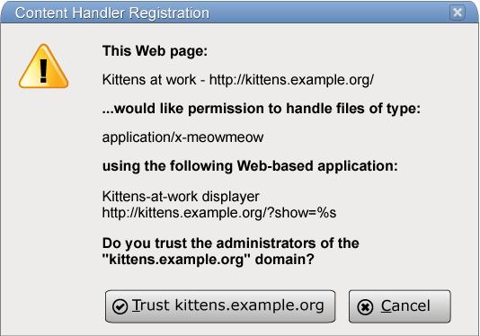

Various mechanisms can cause author-provided executable code to run in the context of a document. These mechanisms include, but are probably not limited to:
script elements.javascript: URLs.addEventListener(), by explicit event handler content attributes, by
event handler IDL attributes, or otherwise.Scripting is enabled in a browsing context when all of the following conditions are true:
Scripting is disabled in a browsing context when any of the above conditions are false (i.e. when scripting is not enabled).
Scripting is enabled for a node if the
Document object of the node (the node itself, if it is itself a Document
object) has an associated browsing context, and scripting is enabled in that browsing context.
Scripting is disabled for a node if there is no such browsing context, or if scripting is disabled in that browsing context.
This specification describes three kinds of JavaScript global environments: the document environment, the dedicated worker environment, and the shared worker environment. The dedicated worker environment and the shared worker environment are both types of worker environments.
Except where otherwise specified, a JavaScript global environment is a document environment.
A script has:
A code entry-point represents a block of executable code that the script exposes to other scripts and to the user agent. Typically, the code corresponding to the code entry-point is executed immediately after the script is parsed, but for event handlers, it is called each time the handler is invoked.
In JavaScript script blocks, this corresponds to the execution
context of the global code.
A flag which, if set, means that error information will not be provided for errors in this script (used to mute errors for cross-origin scripts, since that can leak private information).
An environment settings object, various settings that are shared with other scripts in the same context.
An environment settings object specifies algorithms for obtaining the following:
The characteristics of the script execution environment depend on the language, and are not defined by this specification.
In JavaScript, the script execution environment consists of the interpreter,
the stack of execution contexts, the global code and function code and the
Function objects resulting, and so forth.
An object that provides the APIs that can be called by the code in scripts that use this settings object.
This is typically a Window object or a
WorkerGlobalScope object. When a global object is an empty object, it
can't do anything that interacts with the environment.
If the global object is a Window object, then, in JavaScript, the
ThisBinding of the global execution context for this script must be the Window
object's WindowProxy object, rather than the global object. [ECMA262]
This is a willful violation of the JavaScript specification current
at the time of writing (ECMAScript edition 5, as defined in section 10.4.1.1 Initial Global
Execution Context, step 3). The JavaScript specification requires that the this keyword in the global scope return the global object, but this is not
compatible with the security design prevalent in implementations as specified herein. [ECMA262]
A browsing context that is assigned responsibility for actions taken by the scripts that use this environment settings object.
When a script creates and navigates a new
top-level browsing context, the opener attribute
of the new browsing context's Window object will be set to the
responsible browsing context's WindowProxy object.
An event loop that is used when it would not be immediately clear what event loop to use.
A Document that is assigned responsibility for actions taken by the scripts that
use this environment settings object.
For example, the address of the
responsible document is used to set the address of the Document after it has been reset using document.open().
If the responsible event loop is not a browsing context event loop, then the environment settings object has no responsible document.
Either a Document (specifically, the responsible document), or a
URL, which is used by some APIs to determine what value to use for the Referer (sic) header in calls to the fetching algorithm.
A character encoding used to encode URLs by APIs called by scripts that use this environment settings object.
An absolute URL used by APIs called by scripts that use this environment settings object to resolve relative URLs.
An instrument used in security checks.
The relevant settings object for a global object o is the environment settings object whose global object is o. (There is always a 1:1 mapping of global objects to environment settings objects.)
The relevant settings object for a script s is the settings object of s.
Whenever a new Window object is created, it must also create an environment
settings object whose algorithms are defined as follows:
When the environment settings object is created, for each language supported by the user agent, create an appropriate execution environment as defined by the relevant specification.
When a script execution environment is needed, return the appropriate one from those created when the environment settings object was created.
Return the Window object itself.
Return the browsing context with which the Window object is
associated.
Return the event loop that is associated with the unit of related
similar-origin browsing contexts to which the Window object's browsing
context belongs.
Return the Document with which the Window is currently
associated.
Return the Document with which the Window is currently
associated.
Return the current character encoding of
the Document with which the Window is currently associated.
Return the current base URL of the
Document with which the Window is currently associated.
Return the origin of the Document with which the
Window is currently associated.
Return the effective script origin of the Document with which the
Window is currently associated.
Each unit of related similar-origin browsing contexts has a stack of script settings objects, which must be initially empty. When a new environment settings object is pushed onto this stack, the specified environment settings object is to be added to the stack; when the environment settings object on this stack that was most recently pushed onto it is to be popped from the stack, it must be removed. Entries on this stack can be labeled as candidate entry settings objects.
When a user agent is to jump to a code entry-point for a script s, the user agent must run the following steps:
Let context be the settings object of s.
Prepare to run a callback with context as the environment settings object. If this returns "do not run" then abort these steps.
Make the appropriate script execution environment specified by context execute the s's code entry-point.
The steps to prepare to run a callback with an environment settings object o are as follows. They return either "run" or "do not run".
If the global object specified by o is a
Window object whose Document object is not fully active,
then return "do not run" and abort these steps.
If scripting is disabled for the responsible browsing context specified by o, then return "do not run" and abort these steps.
Push o onto the stack of script settings objects, and label it as a candidate entry settings object.
Return "run".
The steps to clean up after running a callback are as follows:
Pop the current incumbent settings object from the stack of script settings objects.
If the stack of script settings objects is now empty, run the global script clean-up jobs. (These cannot run scripts.)
If the stack of script settings objects is now empty, perform a microtask checkpoint. (If this runs scripts, these algorithms will be invoked reentrantly.)
These algorithms are not invoked by one script directly calling another, but they can be invoked reentrantly in an indirect manner, e.g. if a script dispatches an event which has event listeners registered.
When a JavaScript SourceElements production is to be evaluated, the settings object of the script corresponding to that SourceElements must be pushed onto the stack of script settings objects before the evaluation begins, and popped when the evaluation ends (regardless of whether it's an abrupt completion or not).
The entry settings object is the most-recently added environment settings object in the stack of script settings objects that is labeled as a candidate entry settings object. If the stack is empty, or has no entries labeled as such, then there is no entry settings object. It is used to obtain, amongst other things, the API base URL to resolve relative URLs used in scripts running in that unit of related similar-origin browsing contexts.
The incumbent settings object is the environment settings object in the stack of script settings objects that was most-recently added (i.e. the last one on the stack). If the stack is empty, then there is no incumbent settings object. It is used in some security checks.
The Web IDL specification also uses these algorithms. [WEBIDL]
Consider the following two pages, with the first being loaded in a browser window and the
second being loaded in the iframe of the first:
<!-- a/a.html --> <!DOCTYPE HTML> <title>Outer page</title> <iframe src="../b/b.html"></iframe> <input type=button onclick="frames[0].hello()" value="Hello">
<!-- b/b.html -->
<!DOCTYPE HTML>
<title>Inner page</title>
<script>
function hello() {
location.assign('c.html');
}
</script>
When the button is pressed in the inner frame, the outer page runs script in the inner page.
While the hello() function is running, the entry settings
object is that of the outer file (a/a.html), and the
incumbent settings object is that of the inner file (b/b.html). The assign() method uses
the entry settings object to resolve the URL, so we end up loading a/c.html, but it uses the incumbent settings object to establish
the source browsing context, from which the referrer is established, so the Referer header sent with the request for a/c.html specifies the inner file's URL (the one ending with b/b.html).
Each unit of related similar-origin browsing contexts has a global script
clean-up jobs list, which must initially be empty. A global script clean-up job cannot run
scripts, and cannot be sensitive to the order in which other clean-up jobs are executed. The File
API uses this to release blob: URLs. [FILEAPI]
When the user agent is to run the global script clean-up jobs, the user agent must perform each of the jobs in the global script clean-up jobs list and then empty the list.
When the specification says that a script is to be created, given some script source, a script source URL, its scripting language, an environment settings object, and optionally a muted errors flag, the user agent must run the following steps:
Let script be a new script that this algorithm will subsequently initialise.
If scripting is disabled for browsing context passed to this algorithm, then abort these steps, as if the script source described a program that did nothing but return void.
Obtain the appropriate script execution environment for the given scripting language from the environment settings object provided.
Parse/compile/initialise the source of the script using the script execution environment, as appropriate for the scripting language, and thus obtain script's code entry-point.
Let script's settings object be the environment settings object provided.
If the muted errors flag was set, then set script's muted errors flag.
If all the steps above succeeded (in particular, if the script was compiled successfully), Jump to script's code entry-point.
Otherwise, report the error for script, with the problematic position (line number and column number), using the global object specified by the environment settings object as the target. If the error is still not handled after this, then the error may be reported to the user.
User agents may impose resource limitations on scripts, for example CPU quotas, memory limits,
total execution time limits, or bandwidth limitations. When a script exceeds a limit, the user
agent may either throw a QuotaExceededError exception, abort the script without an
exception, prompt the user, or throttle script execution.
For example, the following script never terminates. A user agent could, after waiting for a few seconds, prompt the user to either terminate the script or let it continue.
<script>
while (true) { /* loop */ }
</script>
User agents are encouraged to allow users to disable scripting whenever the user is prompted
either by a script (e.g. using the window.alert() API) or because
of a script's actions (e.g. because it has exceeded a time limit).
If scripting is disabled while a script is executing, the script should be terminated immediately.
User agents may allow users to specifically disable scripts just for the purposes of closing a browsing context.
For example, the prompt mentioned in the example above could also offer the
user with a mechanism to just close the page entirely, without running any unload event handlers.
When the user agent is required to report an error for a particular script script with a particular position line:col, using a particular target target, it must run these steps, after which the error is either handled or not handled:
If target is in error reporting mode, then abort these steps; the error is not handled.
Let target be in error reporting mode.
Let message be a user-agent-defined string describing the error in a
helpful manner.

Let error object be the object that represents the error: in the case of an
uncaught exception, that would be the object that was thrown; in the case of a JavaScript error
that would be an Error object. If there is no corresponding
object, then the null value must be used instead.
Let location be an absolute URL that corresponds to the resource from which script was obtained.
The resource containing the script will typically be the file from which the
Document was parsed, e.g. for inline script elements or event
handler content attributes; or the JavaScript file that the script was in, for external
scripts. Even for dynamically-generated scripts, user agents are strongly encouraged to attempt
to keep track of the original source of a script. For example, if an external script uses the
document.write() API to insert an inline
script element during parsing, the URL of the resource containing the script would
ideally be reported as being the external script, and the line number might ideally be reported
as the line with the document.write() call or where the
string passed to that call was first constructed. Naturally, implementing this can be somewhat
non-trivial.
User agents are similarly encouraged to keep careful track of the original line
numbers, even in the face of document.write() calls
mutating the document as it is parsed, or event handler content attributes spanning
multiple lines.
If script has muted errors, then set message to "Script error.", set location
to the empty string, set line and col to 0, and set error object to null.
Let event be a new trusted
ErrorEvent object that does not bubble but is cancelable, and which has the event
name error.
Initialise event's message
attribute to message.
Initialise event's filename attribute to location.
Initialise event's lineno
attribute to line.
Initialise event's colno
attribute to col.
Initialise event's error
attribute to error object.
Dispatch event at target.
Let target no longer be in error reporting mode.
If event was canceled, then the error is handled. Otherwise, the error is not handled.
When the user agent is to report an exception E, the user agent must report the error for the relevant script, with the problematic position (line number and column number) in the resource containing the script, using the global object specified by the script's settings object as the target. If the error is still not handled after this, then the error may be reported to the user.
When an exception is thrown during the execution of one of the scripts associated with a
Document, and the exception is not caught, the user agent must report the
exception.
ErrorEvent interface[Constructor(DOMString type, optional ErrorEventInit eventInitDict), Exposed=(Window,Worker)]
interface ErrorEvent : Event {
readonly attribute DOMString message;
readonly attribute DOMString filename;
readonly attribute unsigned long lineno;
readonly attribute unsigned long colno;
readonly attribute any error;
};
dictionary ErrorEventInit : EventInit {
DOMString message;
DOMString filename;
unsigned long lineno;
unsigned long colno;
any error;
};
The message attribute must return the
value it was initialised to. When the object is created, this attribute must be initialised to the
empty string. It represents the error message.
The filename attribute must return the
value it was initialised to. When the object is created, this attribute must be initialised to the
empty string. It represents the absolute URL of the script in which the error
originally occurred.
The lineno attribute must return the
value it was initialised to. When the object is created, this attribute must be initialised to
zero. It represents the line number where the error occurred in the script.
The colno attribute must return the value
it was initialised to. When the object is created, this attribute must be initialised to zero. It
represents the column number where the error occurred in the script.
The error attribute must return the value
it was initialised to. When the object is created, this attribute must be initialised to null.
Where appropriate, it is set to the object representing the error (e.g. the exception object in
the case of an uncaught DOM exception).
To coordinate events, user interaction, scripts, rendering, networking, and so forth, user agents must use event loops as described in this section. There are two kinds of event loops: those for browsing contexts, and those for workers.
There must be at least one browsing context event loop per user agent, and at most one per unit of related similar-origin browsing contexts.
When there is more than one event loop for a unit of related browsing contexts, complications arise when a browsing context in that group is navigated such that it switches from one unit of related similar-origin browsing contexts to another. This specification does not currently describe how to handle these complications.
A browsing context event loop always has at least one browsing context. If such an event loop's browsing contexts all go away, then the event loop goes away as well. A browsing context always has an event loop coordinating its activities.
Worker event loops are simpler: each worker has one event loop, and the worker processing model manages the event loop's lifetime.
An event loop has one or more task queues. A task queue is an ordered list of tasks, which are algorithms that are responsible for such work as:
Dispatching an Event object at a particular
EventTarget object is often done by a dedicated task.
Not all events are dispatched using the task queue, many are dispatched during other tasks.
The HTML parser tokenizing one or more bytes, and then processing any resulting tokens, is typically a task.
Calling a callback is often done by a dedicated task.
When an algorithm fetches a resource, if the fetching occurs in a non-blocking fashion then the processing of the resource once some or all of the resource is available is performed by a task.
Some elements have tasks that trigger in response to DOM manipulation, e.g. when that element is inserted into the document.
Each task in a browsing context event
loop is associated with a Document; if the task was queued in the context of
an element, then it is the element's node document; if the task was queued in the context
of a browsing context, then it is the browsing context's active
document at the time the task was queued; if the task was queued by or for a script then the document is the responsible document
specified by the script's settings object.
A task is intended for a specific event loop:
the event loop that is handling tasks for the
task's associated Document or worker.
When a user agent is to queue a task, it must add the given task to one of the task queues of the relevant event loop.
Each task is defined as coming from a specific task
source. All the tasks from one particular task source and destined to a
particular event loop (e.g. the callbacks generated by timers of a
Document, the events fired for mouse movements over that Document, the
tasks queued for the parser of that Document) must always be added to the same
task queue, but tasks from different task sources may be placed in different task
queues.
For example, a user agent could have one task queue for mouse and key events (the user interaction task source), and another for everything else. The user agent could then give keyboard and mouse events preference over other tasks three quarters of the time, keeping the interface responsive but not starving other task queues, and never processing events from any one task source out of order.
Each event loop has a currently running task. Initially, this is null. It is used to handle reentrancy. Each event loop also has a performing a microtask checkpoint flag, which must initially be false. It is used to prevent reentrant invocation of the perform a microtask checkpoint algorithm.
A user agent may have one storage mutex. This mutex is used to control access to shared state like cookies. At any one point, the storage mutex is either free, or owned by a particular event loop or instance of the fetching algorithm.
If a user agent does not implement a storage mutex, it is exempt from implementing the requirements that require it to acquire or release it.
User agent implementors have to make a choice between two evils. On the one hand, not implementing the storage mutex means that there is a risk of data corruption: a site could, for instance, try to read a cookie, increment its value, then write it back out, using the new value of the cookie as a unique identifier for the session; if the site does this twice in two different browser windows at the same time, it might end up using the same "unique" identifier for both sessions, with potentially disastrous effects. On the other hand, implementing the storage mutex has potentially serious performance implications: whenever a site uses Web Storage or cookies, all other sites that try to use Web Storage or cookies are blocked until the first site finishes.
So far, all browsers faced with this decision have opted to not implement the storage mutex.
Whenever a script calls into a plugin, and whenever a plugin calls into a script, the user agent must release the storage mutex.
An event loop must continually run through the following steps for as long as it exists:
Select the oldest task on one of the event
loop's task queues, if any, ignoring, in the case of a
browsing context event loop, tasks whose associated
Documents are not fully active. The user agent may pick any task
queue. If there is no task to select, then jump to the microtasks step below.
Set the event loop's currently running task to the task selected in the previous step.
Run: Run the selected task.
Set the event loop's currently running task back to null.
If the storage mutex is now owned by the event loop, release it so that it is once again free.
Remove the task that was run in the run step above from its task queue.
Microtasks: Perform a microtask checkpoint.
Update the rendering: If this event loop is a browsing context event loop (as opposed to a worker event loop), then run the following substeps.
Let now be the value that would be returned by the Performance
object's now() method. [HRT]
Let docs be the list of Document objects associated with the
event loop in question, sorted arbitrarily except that the following conditions
must be met:
Any Document B that is nested through a
Document A must be listed after A in the list.
If there are two documents A and B whose browsing contexts are both nested
browsing contexts and their browsing context
containers are both elements in the same Document C, then the
order of A and B in the list must match the relative tree
order of their respective browsing context
containers in C.
In the steps below that iterate over docs, each Document must be
processed in the order it is found in the list.
If there is a top-level browsing context B that the user agent
believes would not benefit from having its rendering updated at this time, then remove from
docs all Document objects whose browsing context's
top-level browsing context is B.
Whether a top-level browsing context would benefit from having
its rendering updated depends on various factors, such as the update frequency. For example,
if the browser is attempting to achieve a 60 Hz refresh rate, then these steps are only
necessary every 60th of a second (about 16.7ms). If the browser finds that a top-level
browsing context is not able to sustain this rate, it might drop to a more sustainable
30Hz for that set of Documents, rather than occasionally dropping frames. (This
specification does not mandate any particular model for when to update the rendering.)
Similarly, if a top-level browsing context is in the background, the user agent
might decide to drop that page to a much slower 4Hz, or even less.
For each fully active Document in docs, run the resize steps for
that Document, passing in now as the timestamp. [CSSOMVIEW]
For each fully active Document in docs, run the scroll steps for
that Document, passing in now as the timestamp. [CSSOMVIEW]
For each fully active Document in docs, evaluate media queries and
report changes for that Document, passing in now as the
timestamp. [CSSOMVIEW]
For each fully active Document in docs, run CSS animations and send
events for that Document, passing in now as the timestamp. [CSSANIMATIONS]
For each fully active Document in docs, run the fullscreen rendering
steps for that Document, passing in now as the timestamp. [FULLSCREEN]
For each fully active Document in docs, run the animation frame
callbacks for that Document, passing in now as the
timestamp.
For each fully active Document in docs, update the rendering or user
interface of that Document and its browsing context to reflect the
current state.
If this is a worker event loop (i.e. one running for a
WorkerGlobalScope), but there are no tasks in the
event loop's task queues and the
WorkerGlobalScope object's closing flag is true, then destroy the event
loop, aborting these steps, resuming the run a worker steps described in the
Web Workers section below.
Return to the first step of the event loop.
Each event loop has a microtask queue. A microtask is a task that is originally to be queued on the microtask queue rather than a task queue. There are two kinds of microtasks: solitary callback microtasks, and compound microtasks.
This specification only has solitary callback microtasks. Specifications that use compound microtasks have to take extra care to wrap callbacks to handle spinning the event loop.
When an algorithm requires a microtask to be queued, it must be appended to the relevant event loop's microtask queue; the task source of such a microtask is the microtask task source.
It is possible for a microtask to be moved to a regular task queue, if, during its initial execution, it spins the event loop. In that case, the microtask task source is the task source used. Normally, the task source of a microtask is irrelevant.
When a user agent is to perform a microtask checkpoint, if the performing a microtask checkpoint flag is false, then the user agent must run the following steps:
Let the performing a microtask checkpoint flag be true.
Microtask queue handling: If the event loop's microtask queue is empty, jump to the done step below.
Select the oldest microtask on the event loop's microtask queue.
Set the event loop's currently running task to the task selected in the previous step.
Run: Run the selected task.
This might involve invoking scripted callbacks, which eventually calls the clean up after running a callback steps, which call this perform a microtask checkpoint algorithm again, which is why we use the performing a microtask checkpoint flag to avoid reentrancy.
Set the event loop's currently running task back to null.
If the storage mutex is now owned by the event loop, release it so that it is once again free.
Remove the microtask run in the step above from the microtask queue, and return to the microtask queue handling step.
Done: Let the performing a microtask checkpoint flag be false.
If, while a compound microtask is running, the user agent is required to execute a compound microtask subtask to run a series of steps, the user agent must run the following steps:
Let parent be the event loop's currently running task (the currently running compound microtask).
Let subtask be a new task that consists of running the given series of steps. The task source of such a microtask is the microtask task source. This is a compound microtask subtask.
Set the event loop's currently running task to subtask.
Run subtask.
Set the event loop's currently running task back to parent.
When an algorithm running in parallel is to await a stable state, the user agent must queue a microtask that runs the following steps, and must then stop executing (execution of the algorithm resumes when the microtask is run, as described in the following steps):
Run the algorithm's synchronous section.
Resumes execution of the algorithm in parallel, if appropriate, as described in the algorithm's steps.
Steps in synchronous sections are marked with ⌛.
When an algorithm says to spin the event loop until a condition goal is met, the user agent must run the following steps:
Let task be the event loop's currently running task.
This might be a microtask, in which case it is a solitary callback microtask. It could also be a compound microtask subtask, or a regular task that is not a microtask. It will not be a compound microtask.
Let task source be task's task source.
Let old stack of script settings objects be a copy of the stack of script settings objects.
Empty the stack of script settings objects.
Stop task, allowing whatever algorithm that invoked it to resume, but continue these steps in parallel.
This causes one of the following algorithms to continue: the event loop's main set of steps, the perform a microtask checkpoint algorithm, or the execute a compound microtask subtask algorithm to continue.
Wait until the condition goal is met.
Queue a task to continue running these steps, using the task source task source. Wait until this new task runs before continuing these steps.
Replace the stack of script settings objects with the old stack of script settings objects.
Return to the caller.
Some of the algorithms in this specification, for historical reasons, require the user agent to pause while running a task until a condition goal is met. This means running the following steps:
If necessary, update the rendering or user interface of any Document or
browsing context to reflect the current state.
Wait until the condition goal is met. While a user agent has a paused task, the corresponding event loop must not run further tasks, and any script in the currently running task must block. User agents should remain responsive to user input while paused, however, albeit in a reduced capacity since the event loop will not be doing anything.
When a user agent is to obtain the storage mutex as part of running a task, it must run through the following steps:
If the storage mutex is already owned by this task's event loop, then abort these steps.
Otherwise, pause until the storage mutex can be taken by the event loop.
Take ownership of the storage mutex.
The following task sources are used by a number of mostly unrelated features in this and other specifications.
This task source is used for features that react to DOM manipulations, such as things that happen in a non-blocking fashion when an element is inserted into the document.
This task source is used for features that react to user interaction, for example keyboard or mouse input.
Events sent in response to user input (e.g. click events) must be fired using tasks queued with the user
interaction task source. [DOMEVENTS]
This task source is used for features that trigger in response to network activity.
This task source is used to queue calls to history.back() and similar APIs.
Many objects can have event handlers specified. These act as non-capture event listeners for the object on which they are specified. [DOM]
An event handler has a name, which always starts with
"on" and is followed by the name of the event for which it is intended.
An event handler can either have the value null, or be set
to a callback object, or be set to an internal raw uncompiled
handler. The EventHandler callback function type describes how this is
exposed to scripts. Initially, event handlers must be set to null.
Event handlers are exposed in one of two ways.
The first way, common to all event handlers, is as an event handler IDL attribute.
The second way is as an event handler content
attribute. Event handlers on HTML elements and some of the event handlers on
Window objects are exposed in this way.
An event handler IDL attribute is an IDL attribute for a specific event handler. The name of the IDL attribute is the same as the name of the event handler.
Event handler IDL attributes, on setting, must set the corresponding event handler to their new value, and on getting, must return the result of getting the current value of the event handler in question (this can throw an exception, in which case the getting propagates it to the caller, it does not catch it).
If an event handler IDL attribute exposes an event handler of an object that doesn't exist, it must always return null on getting and must do nothing on setting.
This can happen in particular for event
handler IDL attribute on body elements that do not have corresponding
Window objects.
Certain event handler IDL attributes have additional requirements, in particular
the onmessage attribute of
MessagePort objects.
An event handler content attribute is a content attribute for a specific event handler. The name of the content attribute is the same as the name of the event handler.
Event handler content attributes, when specified, must contain valid JavaScript
code which, when parsed, would match the FunctionBody production after
automatic semicolon insertion. [ECMA262]
When an event handler content attribute is set, the user agent must set the corresponding event handler to an internal raw uncompiled handler consisting of the attribute's new value and the script location where the attribute was set to this value
When an event handler content attribute is removed, the user agent must set the corresponding event handler to null.
When an event handler H of an element
or object T implementing the EventTarget interface is first set
to a non-null value, the user agent must append an event
listener to the list of event listeners
associated with T with type set to the event handler event
type corresponding to H, capture set to false, and
listener set to the event handler processing algorithm defined below. [DOM]
The listener is emphatically not the event handler itself. Every event handler ends up registering the same listener, the algorithm defined below, which takes care of invoking the right callback, and processing the callback's return value.
This only happens the first time the event
handler's value is set. Since listeners are called in the order they were registered, the
order of event listeners for a particular event type will always be first the event listeners
registered with addEventListener() before
the first time the event handler was set to a non-null value,
then the callback to which it is currently set, if any, and finally the event listeners registered
with addEventListener() after the
first time the event handler was set to a non-null value.
This example demonstrates the order in which event listeners are invoked. If the button in this example is clicked by the user, the page will show four alerts, with the text "ONE", "TWO", "THREE", and "FOUR" respectively.
<button id="test">Start Demo</button>
<script>
var button = document.getElementById('test');
button.addEventListener('click', function () { alert('ONE') }, false);
button.setAttribute('onclick', "alert('NOT CALLED')"); // event handler listener is registered here
button.addEventListener('click', function () { alert('THREE') }, false);
button.onclick = function () { alert('TWO'); };
button.addEventListener('click', function () { alert('FOUR') }, false);
</script>
The interfaces implemented by the event object do not influence whether an event handler is triggered or not.
The event handler processing algorithm for an event
handler H and an Event object E is as
follows:
Let callback be the result of getting the current value of the event handler H.
If callback is null, then abort these steps.
Process the Event object E as follows:
ErrorEvent object and the event handler IDL attribute's type is
OnErrorEventHandlerInvoke callback with five
arguments, the first one having the value of E's message attribute, the second having the value of
E's filename attribute, the third
having the value of E's lineno
attribute, the fourth having the value of E's colno attribute, the fifth having the value of
E's error attribute, and with the callback this value set to E's currentTarget. Let return value be the
callback's return value. [WEBIDL]
Invoke callback
with one argument, the value of which is the Event object E,
with the callback this value set to E's currentTarget. Let return value be the callback's return value. [WEBIDL]
In this step, invoke means to invoke the Web IDL callback function.
If an exception gets thrown by the callback, end these steps and allow the exception to propagate. (It will propagate to the DOM event dispatch logic, which will then report the exception.)
Process return value as follows:
mouseovererror and E is an ErrorEvent objectIf return value is a Web IDL boolean true value, then cancel the event.
beforeunloadThe event handler IDL
attribute's type is OnBeforeUnloadEventHandler, and the return value will therefore have been coerced into either the value null or a
DOMString.
If the return value is null, then cancel the event.
Otherwise, If the Event object E is a
BeforeUnloadEvent object, and the Event object E's returnValue
attribute's value is the empty string, then set the returnValue attribute's value to return value.
If return value is a Web IDL boolean false value, then cancel the event.
The EventHandler callback function type represents a callback used for event
handlers. It is represented in Web IDL as follows:
[TreatNonObjectAsNull] callback EventHandlerNonNull = any (Event event); typedef EventHandlerNonNull? EventHandler;
In JavaScript, any Function object implements
this interface.
For example, the following document fragment:
<body onload="alert(this)" onclick="alert(this)">
...leads to an alert saying "[object Window]" when the document is
loaded, and an alert saying "[object HTMLBodyElement]" whenever the
user clicks something in the page.
The return value of the function affects whether the event is canceled or not:
as described above, if the return value is false, the event is canceled
(except for mouseover events, where the return value has to
be true to cancel the event). With beforeunload events,
the value is instead used to determine the message to show the user.
For historical reasons, the onerror handler has different
arguments:
[TreatNonObjectAsNull] callback OnErrorEventHandlerNonNull = any ((Event or DOMString) event, optional DOMString source, optional unsigned long lineno, optional unsigned long column, optional any error); typedef OnErrorEventHandlerNonNull? OnErrorEventHandler;
Similarly, the onbeforeunload handler has a
different return value:
[TreatNonObjectAsNull] callback OnBeforeUnloadEventHandlerNonNull = DOMString? (Event event); typedef OnBeforeUnloadEventHandlerNonNull? OnBeforeUnloadEventHandler;
An internal raw uncompiled handler is a tuple with the following information:
When the user agent is to get the current value of the event handler H, it must run these steps:
If H's value is an internal raw uncompiled handler, run these substeps:
If H is an element's event handler, then let element be the element, and document be the element's node document.
Otherwise, H is a Window object's event handler: let element be null, and let document be the Document most recently associated with that
Window object.
If document is not in a browsing context, or if scripting is enabled for document's browsing context, then return null and abort the algorithm for getting the current value of the event handler.
Let body be the uncompiled script body in the internal raw uncompiled handler.
Let location be the location where the script body originated, as given by the internal raw uncompiled handler.
If element is not null and element has a form owner, let form owner be that form owner. Otherwise, let form owner be null.
Let script settings be the environment settings object
created for the Window object with which document is
currently associated.
Obtain the script execution environment for JavaScript from script settings.
If body is not parsable as FunctionBody or if parsing detects an early error, then follow these substeps:
Set H's value to null.
Report the error for the appropriate script and with the appropriate position (line number and column number) given by location, using the global object specified by script settings as the target. If the error is still not handled after this, then the error may be reported to the user.
Jump to the step labeled end below.
FunctionBody is defined in ECMAScript edition 5 section 13 Function Definition. Early error is defined in ECMAScript edition 5 section 16 Errors. [ECMA262]
If body begins with a Directive Prologue that contains a Use Strict Directive then let strict be true, otherwise let strict be false.
The terms "Directive Prologue" and "Use Strict Directive" are defined in ECMAScript edition 5 section 14.1 Directive Prologues and the Use Strict Directive. [ECMA262]
Using the script execution environment obtained above, create a function object (as defined in ECMAScript edition 5 section 13.2 Creating Function Objects), with:
onerror event handler of a Window objectevent, source, lineno, colno, and
error.event.If H is an element's event handler, then let Scope be the result of NewObjectEnvironment(document, the global environment).
Otherwise, H is a Window object's event handler: let Scope be the global environment.
If form owner is not null, let Scope be the result of NewObjectEnvironment(form owner, Scope).
If element is not null, let Scope be the result of NewObjectEnvironment(element, Scope).
NewObjectEnvironment() is defined in ECMAScript edition 5 section 10.2.2.3 NewObjectEnvironment (O, E). [ECMA262]
Let function be this new function.
Let script be a new script.
Let script's code entry-point be function.
Let script's settings object be script settings.
Set H to function.
End: Return H's value.
Document objects, and Window objectsThe following are the event handlers (and their corresponding event handler event types) that must be
supported by all HTML elements, as both event handler content attributes
and event handler IDL attributes; and that must be
supported by all Document and Window objects, as event handler IDL
attributes:
| Event handler | Event handler event type |
|---|---|
onabort | abort
|
onautocomplete | autocomplete
|
onautocompleteerror | autocompleteerror
|
oncancel | cancel
|
oncanplay | canplay
|
oncanplaythrough | canplaythrough
|
onchange | change
|
onclick | click
|
onclose | close
|
oncontextmenu | contextmenu
|
oncuechange | cuechange
|
ondblclick | dblclick
|
ondrag | drag
|
ondragend | dragend
|
ondragenter | dragenter
|
ondragexit | dragexit
|
ondragleave | dragleave
|
ondragover | dragover
|
ondragstart | dragstart
|
ondrop | drop
|
ondurationchange | durationchange
|
onemptied | emptied
|
onended | ended
|
oninput | input
|
oninvalid | invalid
|
onkeydown | keydown
|
onkeypress | keypress
|
onkeyup | keyup
|
onloadeddata | loadeddata
|
onloadedmetadata | loadedmetadata
|
onloadstart | loadstart
|
onmousedown | mousedown
|
onmouseenter | mouseenter
|
onmouseleave | mouseleave
|
onmousemove | mousemove
|
onmouseout | mouseout
|
onmouseover | mouseover
|
onmouseup | mouseup
|
onmousewheel | mousewheel
|
onpause | pause
|
onplay | play
|
onplaying | playing
|
onprogress | progress
|
onratechange | ratechange
|
onreset | reset
|
onseeked | seeked
|
onseeking | seeking
|
onselect | select
|
onshow | show
|
onsort | sort
|
onstalled | stalled
|
onsubmit | submit
|
onsuspend | suspend
|
ontimeupdate | timeupdate
|
ontoggle | toggle
|
onvolumechange | volumechange
|
onwaiting | waiting
|
The following are the event handlers (and their corresponding event handler event types) that must be
supported by all HTML elements other than body and frameset
elements, as both event handler content attributes and event handler IDL
attributes; that must be supported by all Document
objects, as event handler IDL attributes; and that must be
supported by all Window objects, as event handler IDL attributes on the
Window objects themselves, and with corresponding event handler content
attributes and event handler IDL attributes exposed on all body
and frameset elements that are owned by that
Window object's Documents:
| Event handler | Event handler event type |
|---|---|
onblur | blur
|
onerror | error
|
onfocus | focus
|
onload | load
|
onresize | resize
|
onscroll | scroll
|
The following are the event handlers (and their corresponding event handler event types) that must be
supported by Window objects, as event handler IDL attributes on the
Window objects themselves, and with corresponding event handler content
attributes and event handler IDL attributes exposed on all body
and frameset elements that are owned by that
Window object's Documents:
| Event handler | Event handler event type |
|---|---|
onafterprint | afterprint
|
onbeforeprint | beforeprint
|
onbeforeunload | beforeunload
|
onhashchange | hashchange
|
onlanguagechange | languagechange
|
onmessage | message
|
onoffline | offline
|
ononline | online
|
onpagehide | pagehide
|
onpageshow | pageshow
|
onpopstate | popstate
|
onstorage | storage
|
onunload | unload
|
The following are the event handlers (and their corresponding event handler event types) that must be
supported on Document objects as event handler IDL attributes:
| Event handler | Event handler event type |
|---|---|
onreadystatechange | readystatechange
|
[NoInterfaceObject]
interface GlobalEventHandlers {
attribute EventHandler onabort;
attribute EventHandler onautocomplete;
attribute EventHandler onautocompleteerror;
attribute EventHandler onblur;
attribute EventHandler oncancel;
attribute EventHandler oncanplay;
attribute EventHandler oncanplaythrough;
attribute EventHandler onchange;
attribute EventHandler onclick;
attribute EventHandler onclose;
attribute EventHandler oncontextmenu;
attribute EventHandler oncuechange;
attribute EventHandler ondblclick;
attribute EventHandler ondrag;
attribute EventHandler ondragend;
attribute EventHandler ondragenter;
attribute EventHandler ondragexit;
attribute EventHandler ondragleave;
attribute EventHandler ondragover;
attribute EventHandler ondragstart;
attribute EventHandler ondrop;
attribute EventHandler ondurationchange;
attribute EventHandler onemptied;
attribute EventHandler onended;
attribute OnErrorEventHandler onerror;
attribute EventHandler onfocus;
attribute EventHandler oninput;
attribute EventHandler oninvalid;
attribute EventHandler onkeydown;
attribute EventHandler onkeypress;
attribute EventHandler onkeyup;
attribute EventHandler onload;
attribute EventHandler onloadeddata;
attribute EventHandler onloadedmetadata;
attribute EventHandler onloadstart;
attribute EventHandler onmousedown;
[LenientThis] attribute EventHandler onmouseenter;
[LenientThis] attribute EventHandler onmouseleave;
attribute EventHandler onmousemove;
attribute EventHandler onmouseout;
attribute EventHandler onmouseover;
attribute EventHandler onmouseup;
attribute EventHandler onmousewheel;
attribute EventHandler onpause;
attribute EventHandler onplay;
attribute EventHandler onplaying;
attribute EventHandler onprogress;
attribute EventHandler onratechange;
attribute EventHandler onreset;
attribute EventHandler onresize;
attribute EventHandler onscroll;
attribute EventHandler onseeked;
attribute EventHandler onseeking;
attribute EventHandler onselect;
attribute EventHandler onshow;
attribute EventHandler onsort;
attribute EventHandler onstalled;
attribute EventHandler onsubmit;
attribute EventHandler onsuspend;
attribute EventHandler ontimeupdate;
attribute EventHandler ontoggle;
attribute EventHandler onvolumechange;
attribute EventHandler onwaiting;
};
[NoInterfaceObject]
interface WindowEventHandlers {
attribute EventHandler onafterprint;
attribute EventHandler onbeforeprint;
attribute OnBeforeUnloadEventHandler onbeforeunload;
attribute EventHandler onhashchange;
attribute EventHandler onlanguagechange;
attribute EventHandler onmessage;
attribute EventHandler onoffline;
attribute EventHandler ononline;
attribute EventHandler onpagehide;
attribute EventHandler onpageshow;
attribute EventHandler onpopstate;
attribute EventHandler onstorage;
attribute EventHandler onunload;
};Certain operations and methods are defined as firing events on elements. For example, the click() method on the HTMLElement interface is defined as
firing a click event on the element. [DOMEVENTS]
Firing a simple event named e
means that a trusted event with the name e, which does not bubble (except where otherwise stated) and is not cancelable
(except where otherwise stated), and which uses the Event interface, must be created
and dispatched at the given target.
Firing a synthetic mouse event named e means that an event with the name e, which is trusted (except where otherwise stated), does not bubble
(except where otherwise stated), is not cancelable (except where otherwise stated), and which uses
the MouseEvent interface, must be created and dispatched at the given target. The
event object must have its screenX, screenY, clientX, clientY, and button
attributes initialised to 0, its ctrlKey, shiftKey,
altKey, and metaKey attributes initialised according
to the current state of the key input device, if any (false for any keys that are not available),
its detail attribute initialised to 1, its relatedTarget attribute initialised to null (except
where otherwise stated), and its view attribute initialised to the Window object of the Document object of the given target node, if any, or else null. The getModifierState() method on the object must
return values appropriately describing the state of the key input device at the time the event is
created.
Firing a click event
means firing a synthetic mouse event named click, which bubbles and is cancelable.
The default action of these events is to do nothing except where otherwise stated.
Window objectWhen an event is dispatched at a DOM node in a Document in a browsing
context, if the event is not a load event, the user agent
must act as if, for the purposes of event dispatching,
the Window object is the parent of the Document object. [DOM]
The atob() and btoa() methods allow authors to transform content to and from
the base64 encoding.
[NoInterfaceObject, Exposed=(Window,Worker)]
interface WindowBase64 {
DOMString btoa(DOMString btoa);
DOMString atob(DOMString atob);
};
Window implements WindowBase64;
In these APIs, for mnemonic purposes, the "b" can be considered to stand for "binary", and the "a" for "ASCII". In practice, though, for primarily historical reasons, both the input and output of these functions are Unicode strings.
btoa( data )Takes the input data, in the form of a Unicode string containing only characters in the range U+0000 to U+00FF, each representing a binary byte with values 0x00 to 0xFF respectively, and converts it to its base64 representation, which it returns.
Throws an InvalidCharacterError exception if the input string contains any
out-of-range characters.
atob( data )Takes the input data, in the form of a Unicode string containing base64-encoded binary data, decodes it, and returns a string consisting of characters in the range U+0000 to U+00FF, each representing a binary byte with values 0x00 to 0xFF respectively, corresponding to that binary data.
Throws an InvalidCharacterError exception if the input string is not valid
base64 data.
The WindowBase64 interface adds to the Window interface
and the WorkerGlobalScope interface (part of Web workers).
The btoa() method must throw an
InvalidCharacterError exception if the method's first argument contains any character
whose code point is greater than U+00FF. Otherwise, the user agent must convert that argument to a
sequence of octets whose nth octet is the eight-bit representation of the code
point of the nth character of the argument, and then must apply the base64
algorithm to that sequence of octets, and return the result. [RFC4648]
The atob() method must run the following
steps to parse the string passed in the method's first argument:
Let input be the string being parsed.
Let position be a pointer into input, initially pointing at the start of the string.
Remove all space characters from input.
If the length of input divides by 4 leaving no remainder, then: if input ends with one or two U+003D EQUALS SIGN (=) characters, remove them from input.
If the length of input divides by 4 leaving a remainder of 1, throw an
InvalidCharacterError exception and abort these steps.
If input contains a character that is not in the following list of
characters and character ranges, throw an InvalidCharacterError exception and abort
these steps:
Let output be a string, initially empty.
Let buffer be a buffer that can have bits appended to it, initially empty.
While position does not point past the end of input, run these substeps:
Find the character pointed to by position in the first column of the following table. Let n be the number given in the second cell of the same row.
| Character | Number |
|---|---|
| A | 0 |
| B | 1 |
| C | 2 |
| D | 3 |
| E | 4 |
| F | 5 |
| G | 6 |
| H | 7 |
| I | 8 |
| J | 9 |
| K | 10 |
| L | 11 |
| M | 12 |
| N | 13 |
| O | 14 |
| P | 15 |
| Q | 16 |
| R | 17 |
| S | 18 |
| T | 19 |
| U | 20 |
| V | 21 |
| W | 22 |
| X | 23 |
| Y | 24 |
| Z | 25 |
| a | 26 |
| b | 27 |
| c | 28 |
| d | 29 |
| e | 30 |
| f | 31 |
| g | 32 |
| h | 33 |
| i | 34 |
| j | 35 |
| k | 36 |
| l | 37 |
| m | 38 |
| n | 39 |
| o | 40 |
| p | 41 |
| q | 42 |
| r | 43 |
| s | 44 |
| t | 45 |
| u | 46 |
| v | 47 |
| w | 48 |
| x | 49 |
| y | 50 |
| z | 51 |
| 0 | 52 |
| 1 | 53 |
| 2 | 54 |
| 3 | 55 |
| 4 | 56 |
| 5 | 57 |
| 6 | 58 |
| 7 | 59 |
| 8 | 60 |
| 9 | 61 |
| + | 62 |
| / | 63 |
Append to buffer the six bits corresponding to number, most significant bit first.
If buffer has accumulated 24 bits, interpret them as three 8-bit big-endian numbers. Append the three characters with code points equal to those numbers to output, in the same order, and then empty buffer.
Advance position by one character.
If buffer is not empty, it contains either 12 or 18 bits. If it contains 12 bits, discard the last four and interpret the remaining eight as an 8-bit big-endian number. If it contains 18 bits, discard the last two and interpret the remaining 16 as two 8-bit big-endian numbers. Append the one or two characters with code points equal to those one or two numbers to output, in the same order.
The discarded bits mean that, for instance, atob("YQ") and
atob("YR") both return "a".
Return output.
APIs for dynamically inserting markup into the document interact with the parser, and thus their behaviour varies depending on whether they are used with HTML documents (and the HTML parser) or XHTML in XML documents (and the XML parser).
The open() method comes in several variants
with different numbers of arguments.
open( [ type [, replace ] ] )Causes the Document to be replaced in-place, as if it was a new
Document object, but reusing the previous object, which is then returned.
If the type argument is omitted or has the value
"text/html", then the resulting Document has an HTML parser associated
with it, which can be given data to parse using document.write(). Otherwise, all content passed to document.write() will be parsed as plain text.
If the replace argument is present and has the value "replace", the existing entries in the session history for the
Document object are removed.
The method has no effect if the Document is still being parsed.
Throws an InvalidStateError exception if the Document is an XML document.
open( url, name, features [, replace ] )Works like the window.open() method.
Document objects have an ignore-opens-during-unload counter, which is
used to prevent scripts from invoking the document.open()
method (directly or indirectly) while the document is being
unloaded. Initially, the counter must be set to zero.
When called with two arguments (or fewer), the document.open()
method must act as follows:
If the Document object is not flagged as an HTML
document, throw an InvalidStateError exception and abort these steps.
If the Document object is not an active document, then abort
these steps.
Let type be the value of the first argument.
If the second argument is an ASCII case-insensitive match for the value "replace", then let replace be true.
Otherwise, if the browsing context's session history contains only
one Document, and that was the about:blank Document
created when the browsing context was created, and that Document has
never had the unload a document algorithm invoked on it (e.g. by a previous call to
document.open()), then let replace be
true.
Otherwise, let replace be false.
If the Document has an active parser whose script nesting
level is greater than zero, then the method does nothing. Abort these steps and return
the Document object on which the method was invoked.
This basically causes document.open() to
be ignored when it's called in an inline script found during parsing, while still letting it
have an effect when called from a non-parser task such as a timer callback or event handler.
Similarly, if the Document's ignore-opens-during-unload counter is
greater than zero, then the method does nothing. Abort these steps and return the
Document object on which the method was invoked.
This basically causes document.open() to
be ignored when it's called from a beforeunload pagehide, or unload event
handler while the Document is being unloaded.
Release the storage mutex.
Set the Document's salvageable state to false.
Prompt to unload the
Document object. If the user refused to allow the document to be
unloaded, then abort these steps and return the Document object on which the
method was invoked.
Unload the Document object, with the
recycle parameter set to true.
Unregister all event listeners registered on the Document node and its
descendants.
Remove any tasks associated with the
Document in any task source.
Remove all child nodes of the document, without firing any mutation events.
Replace the Document's singleton objects with new instances of those objects.
(This includes in particular the Window, Location,
History, ApplicationCache, and Navigator, objects, the
various BarProp objects, the two Storage objects, the various
HTMLCollection objects, and objects defined by other specifications, like
Selection. It also includes all the Web
IDL prototypes in the JavaScript binding, including the Document object's
prototype.)
The new Window object has a new environment settings
object.
Change the document's character encoding to UTF-8.
If the Document is ready for post-load tasks, then set the
Document object's reload override flag and set the
Document's reload override buffer to the empty string.
Set the Document's salvageable state back to true.
Change the document's address to the address of the responsible document specified by the entry settings object.
If the Document's iframe load in progress flag is set, set the
Document's mute iframe load flag.
Create a new HTML parser and associate it with the document. This is a
script-created parser (meaning that it can be closed by the document.open() and document.close() methods, and that the tokenizer will wait for
an explicit call to document.close() before emitting an
end-of-file token). The encoding confidence is
irrelevant.
Set the current document readiness of the document to "loading".
If type is an ASCII case-insensitive match for the string
"replace", then, for historical reasons, set it to the string "text/html".
Otherwise:
If the type string contains a U+003B SEMICOLON character (;), remove the first such character and all characters from it up to the end of the string.
Strip leading and trailing whitespace from type.
If type is not now an ASCII case-insensitive match
for the string "text/html", then act as if the tokenizer had emitted a start tag
token with the tag name "pre" followed by a single U+000A LINE FEED (LF) character, then switch the
HTML parser's tokenizer to the PLAINTEXT state.
Remove all the entries in the browsing context's session history after the current entry. If the current entry is the last entry in the session history, then no entries are removed.
This doesn't necessarily have to affect the user agent's user interface.
Remove any tasks queued by the history traversal
task source that are associated with any Document objects in the
top-level browsing context's document family.
Document.If replace is false, then add a new entry, just before the last entry,
and associate with the new entry the text that was parsed by the previous parser associated with
the Document object, as well as the state of the document at the start of these
steps. This allows the user to step backwards in the session history to see the page before it
was blown away by the document.open() call. This new entry
does not have a Document object, so a new one will be created if the session history
is traversed to that entry.
Finally, set the insertion point to point at just before the end of the input stream (which at this point will be empty).
Return the Document on which the method was invoked.
The document.open() method does not affect
whether a Document is ready for post-load tasks or completely
loaded.
When called with four arguments, the open() method on
the Document object must call the open() method on the
Window object of the Document object, with the same arguments as the
original call to the open() method, and return whatever
that method returned. If the Document object has no Window object, then
the method must throw an InvalidAccessError exception.
close()Closes the input stream that was opened by the document.open() method.
Throws an InvalidStateError exception if the
Document is an XML
document.
The close() method must run the following
steps:
If the Document object is not flagged as an HTML
document, throw an InvalidStateError exception and abort these
steps.
If there is no script-created parser associated with the document, then abort these steps.
Insert an explicit "EOF" character at the end of the parser's input stream.
If there is a pending parsing-blocking script, then abort these steps.
Run the tokenizer, processing resulting tokens as they are emitted, and stopping when the tokenizer reaches the explicit "EOF" character or spins the event loop.
document.write()write(text...)In general, adds the given string(s) to the Document's input stream.
This method has very idiosyncratic behaviour. In some cases, this method can
affect the state of the HTML parser while the parser is running, resulting in a DOM
that does not correspond to the source of the document (e.g. if the string written is the string
"<plaintext>" or "<!--"). In other cases,
the call can clear the current page first, as if document.open() had been called. In yet more cases, the method
is simply ignored, or throws an exception. To make matters worse, the exact behaviour of this
method can in some cases be dependent on network latency, which can lead to failures that are very hard to debug. For all these reasons, use
of this method is strongly discouraged.
This method throws an InvalidStateError exception when invoked on XML
documents.
Document objects have an ignore-destructive-writes counter, which is
used in conjunction with the processing of script elements to prevent external
scripts from being able to use document.write() to blow
away the document by implicitly calling document.open().
Initially, the counter must be set to zero.
The document.write(...) method must act as
follows:
If the method was invoked on an XML document, throw an
InvalidStateError exception and abort these steps.
If the Document object is not an active document, then abort
these steps.
If the insertion point is undefined and either the Document's
ignore-opens-during-unload counter is greater than zero or the
Document's ignore-destructive-writes counter is greater than zero,
abort these steps.
If the insertion point is undefined, call the open() method on the document
object (with no arguments). If the user refused to allow the document to be
unloaded, then abort these steps. Otherwise, the insertion point will point
at just before the end of the (empty) input stream.
Insert the string consisting of the concatenation of all the arguments to the method into the input stream just before the insertion point.
If the Document object's reload override flag is set, then append
the string consisting of the concatenation of all the arguments to the method to the
Document's reload override buffer.
If there is no pending parsing-blocking script, have the HTML
parser process the characters that were inserted, one at a time, processing resulting
tokens as they are emitted, and stopping when the tokenizer reaches the insertion point or when
the processing of the tokenizer is aborted by the tree construction stage (this can happen if a
script end tag token is emitted by the tokenizer).
If the document.write() method was
called from script executing inline (i.e. executing because the parser parsed a set of
script tags), then this is a reentrant invocation of the
parser.
Finally, return from the method.
document.writeln()writeln(text...)Adds the given string(s) to the Document's input stream, followed by a newline
character. If necessary, calls the open() method
implicitly first.
This method throws an InvalidStateError exception when invoked on XML
documents.
The document.writeln(...) method, when
invoked, must act as if the document.write() method had
been invoked with the same argument(s), plus an extra argument consisting of a string containing a
single line feed character (U+000A).
The setTimeout()
and setInterval()
methods allow authors to schedule timer-based callbacks.
[NoInterfaceObject, Exposed=(Window,Worker)]
interface WindowTimers {
long setTimeout(Function handler, optional long timeout = 0, any... arguments);
long setTimeout(DOMString handler, optional long timeout = 0, any... arguments);
void clearTimeout(optional long handle = 0);
long setInterval(Function handler, optional long timeout = 0, any... arguments);
long setInterval(DOMString handler, optional long timeout = 0, any... arguments);
void clearInterval(optional long handle = 0);
};
Window implements WindowTimers;
setTimeout( handler [, timeout [, arguments... ] ] )Schedules a timeout to run handler after timeout milliseconds. Any arguments are passed straight through to the handler.
setTimeout( code [, timeout ] )Schedules a timeout to compile and run code after timeout milliseconds.
clearTimeout( handle )Cancels the timeout set with setTimeout()
identified by handle.
setInterval( handler [, timeout [, arguments... ] ] )Schedules a timeout to run handler every timeout milliseconds. Any arguments are passed straight through to the handler.
setInterval( code [, timeout ] )Schedules a timeout to compile and run code every timeout milliseconds.
clearInterval( handle )Cancels the timeout set with setInterval() identified by handle.
Timers can be nested; after five such nested timers, however, the interval is forced to be at least four milliseconds.
This API does not guarantee that timers will run exactly on schedule. Delays due to CPU load, other tasks, etc, are to be expected.
The WindowTimers interface adds to the Window interface
and the WorkerGlobalScope interface (part of Web workers).
Each object that implements the WindowTimers interface has a list of active
timers. Each entry in this lists is identified by a number, which must be unique within the
list for the lifetime of the object that implements the WindowTimers interface.
The setTimeout() method must return
the value returned by the timer initialisation steps, passing them the method's
arguments, the object on which the method for which the algorithm is running is implemented (a
Window or WorkerGlobalScope object) as the method
context, and the repeat flag set to false.
The setInterval() method must
return the value returned by the timer initialisation steps, passing them the
method's arguments, the object on which the method for which the algorithm is running is
implemented (a Window or WorkerGlobalScope object) as the method context, and the repeat flag set to true.
The clearTimeout() and clearInterval() methods must clear the
entry identified as handle from the list of active timers of the
WindowTimers object on which the method was invoked, if any, where handle is the argument passed to the method. (If handle does
not identify an entry in the list of active timers of the WindowTimers
object on which the method was invoked, the method does nothing.)
The timer initialisation steps, which are invoked with some method arguments, a method context, a repeat flag which can be true or false, and optionally (and only if the repeat flag is true) a previous handle, are as follows:
Let method context proxy be method context if that
is a WorkerGlobalScope object, or else the WindowProxy that corresponds
to method context.
If previous handle was provided, let handle be previous handle; otherwise, let handle be a user-agent-defined integer that is greater than zero that will identify the timeout to be set by this call in the list of active timers.
If previous handle was not provided, add an entry to the list of active timers for handle.
Let task be a task that runs the following substeps:
If the entry for handle in the list of active timers has been cleared, then abort this task's substeps.
Run the appropriate set of steps from the following list:
FunctionInvoke the Function. Use the third and subsequent method
arguments (if any) as the arguments for invoking the Function. Use method context proxy as the
thisArg for invoking the Function. [ECMA262]
Let script source be the first method argument.
Let script language be JavaScript.
Let settings object be method context's environment settings object.
Create a script using script source as the script source, the URL where script source can be found, scripting language as the scripting language, and settings object as the environment settings object.
If the repeat flag is true, then call timer initialisation steps again, passing them the same method arguments, the same method context, with the repeat flag still set to true, and with the previous handle set to handler.
Let timeout be the second method argument.
If the currently running task is a task that was created by this algorithm, then let nesting level be the task's timer nesting level. Otherwise, let nesting level be zero.
If nesting level is greater than 5, and timeout is less than 4, then increase timeout to 4.
Increment nesting level by one.
Let task's timer nesting level be nesting level.
Return handle, and then continue running this algorithm in parallel.
If method context is a Window object, wait until the
Document associated with method context has been fully
active for a further timeout milliseconds (not necessarily
consecutively).
Otherwise, method context is a WorkerGlobalScope object;
wait until timeout milliseconds have passed with the worker not suspended
(not necessarily consecutively).
Wait until any invocations of this algorithm that had the same method context, that started before this one, and whose timeout is equal to or less than this one's, have completed.
Argument conversion as defined by Web IDL (for example, invoking toString() methods on objects passed as the first argument) happens in the
algorithms defined in Web IDL, before this algorithm is invoked.
So for example, the following rather silly code will result in the log containing "ONE TWO ":
var log = '';
function logger(s) { log += s + ' '; }
setTimeout({ toString: function () {
setTimeout("logger('ONE')", 100);
return "logger('TWO')";
} }, 100);
Optionally, wait a further user-agent defined length of time.
This is intended to allow user agents to pad timeouts as needed to optimise the power usage of the device. For example, some processors have a low-power mode where the granularity of timers is reduced; on such platforms, user agents can slow timers down to fit this schedule instead of requiring the processor to use the more accurate mode with its associated higher power usage.
Once the task has been processed, if the repeat flag is false, it is safe to remove the entry for handle from the list of active timers (there is no way for the entry's existence to be detected past this point, so it does not technically matter one way or the other).
The task source for these tasks is the timer task source.
To run tasks of several milliseconds back to back without any delay, while still yielding back to the browser to avoid starving the user interface (and to avoid the browser killing the script for hogging the CPU), simply queue the next timer before performing work:
function doExpensiveWork() {
var done = false;
// ...
// this part of the function takes up to five milliseconds
// set done to true if we're done
// ...
return done;
}
function rescheduleWork() {
var handle = setTimeout(rescheduleWork, 0); // preschedule next iteration
if (doExpensiveWork())
clearTimeout(handle); // clear the timeout if we don't need it
}
function scheduleWork() {
setTimeout(rescheduleWork, 0);
}
scheduleWork(); // queues a task to do lots of work
alert(message)Displays a modal alert with the given message, and waits for the user to dismiss it.
A call to the navigator.yieldForStorageUpdates() method is
implied when this method is invoked.
confirm(message)Displays a modal OK/Cancel prompt with the given message, waits for the user to dismiss it, and returns true if the user clicks OK and false if the user clicks Cancel.
A call to the navigator.yieldForStorageUpdates() method is
implied when this method is invoked.
prompt(message [, default] )Displays a modal text field prompt with the given message, waits for the user to dismiss it, and returns the value that the user entered. If the user cancels the prompt, then returns null instead. If the second argument is present, then the given value is used as a default.
A call to the navigator.yieldForStorageUpdates() method is
implied when this method is invoked.
Logic that depends on tasks or microtasks, such as media elements loading their media data, are stalled when these methods are invoked.
The alert(message) method, when
invoked, must run the following steps:
If the event loop's termination nesting level is non-zero, optionally abort these steps.
Release the storage mutex.
Optionally, abort these steps. (For example, the user agent might give the user the option to ignore all alerts, and would thus abort at this step whenever the method was invoked.)
If the method was invoked with no arguments, then let message be the empty string; otherwise, let message be the method's first argument.
Show the given message to the user.
Optionally, pause while waiting for the user to acknowledge the message.
The confirm(message) method,
when invoked, must run the following steps:
If the event loop's termination nesting level is non-zero, optionally abort these steps, returning false.
Release the storage mutex.
Optionally, return false and abort these steps. (For example, the user agent might give the user the option to ignore all prompts, and would thus abort at this step whenever the method was invoked.)
Show the given message to the user, and ask the user to respond with a positive or negative response.
Pause until the user responds either positively or negatively.
If the user responded positively, return true; otherwise, the user responded negatively: return false.
The prompt(message, default) method, when invoked, must run the following steps:
If the event loop's termination nesting level is non-zero, optionally abort these steps, returning null.
Release the storage mutex.
Optionally, return null and abort these steps. (For example, the user agent might give the user the option to ignore all prompts, and would thus abort at this step whenever the method was invoked.)
Show the given message to the user, and ask the user to either respond with a string value or abort. The response must be defaulted to the value given by default.
Pause while waiting for the user's response.
If the user aborts, then return null; otherwise, return the string that the user responded with.
print()Prompts the user to print the page.
A call to the navigator.yieldForStorageUpdates() method is
implied when this method is invoked.
When the print() method is invoked, if the
Document is ready for post-load tasks, then the user agent must
run the printing steps in parallel. Otherwise, the user agent must only set the
print when loaded flag on the Document.
User agents should also run the printing steps whenever the user asks for the opportunity to obtain a physical form (e.g. printed copy), or the representation of a physical form (e.g. PDF copy), of a document.
The printing steps are as follows:
The user agent may display a message to the user or abort these steps (or both).
For instance, a kiosk browser could silently ignore any invocations of the
print() method.
For instance, a browser on a mobile device could detect that there are no printers in the vicinity and display a message saying so before continuing to offer a "save to PDF" option.
The user agent must fire a simple event named beforeprint at the Window object of the
Document that is being printed, as well as any nested browsing contexts in it.
The beforeprint event can be used to
annotate the printed copy, for instance adding the time at which the document was printed.
The user agent must release the storage mutex.
The user agent should offer the user the opportunity to obtain a physical form (or the representation of a physical form) of the document. The user agent may wait for the user to either accept or decline before returning; if so, the user agent must pause while the method is waiting. Even if the user agent doesn't wait at this point, the user agent must use the state of the relevant documents as they are at this point in the algorithm if and when it eventually creates the alternate form.
The user agent must fire a simple event named afterprint at the Window object of the
Document that is being printed, as well as any nested browsing contexts in it.
The afterprint event can be used to
revert annotations added in the earlier event, as well as showing post-printing UI. For
instance, if a page is walking the user through the steps of applying for a home loan, the
script could automatically advance to the next step after having printed a form or other.
showModalDialog()This feature is in the process of being removed from the Web platform. (This
is a long process that takes many years.) Using the showModalDialog() API at this time is highly discouraged.
The showModalDialog(url, argument) method, when invoked,
must cause the user agent to run the following steps:
Resolve url relative to the API base URL specified by the entry settings object.
If this fails, then throw a SyntaxError exception and abort these steps.
If the event loop's termination nesting level is non-zero, optionally abort these steps, returning the empty string.
Release the storage mutex.
If the user agent is configured such that this invocation of showModalDialog() is somehow disabled, then return the empty
string and abort these steps.
User agents are expected to disable this method in certain cases to avoid user annoyance (e.g. as part of their popup blocker feature). For instance, a user agent could require that a site be white-listed before enabling this method, or the user agent could be configured to only allow one modal dialog at a time.
If the active sandboxing flag set of the active document of the responsible browsing context specified by the incumbent settings object has its sandboxed auxiliary navigation browsing context flag set, then return the empty string and abort these steps.
Let incumbent origin be the effective script origin
specified by the incumbent settings object at the time the showModalDialog() method was called.
Let the list of background browsing contexts be a list of all the browsing contexts that:
Window object on which the showModalDialog() method was called, and that...as well as any browsing contexts that are nested inside any of the browsing contexts matching those conditions.
Disable the user interface for all the browsing contexts in the list of background browsing contexts. This should prevent the user from navigating those browsing contexts, causing events to be sent to those browsing context, or editing any content in those browsing contexts. However, it does not prevent those browsing contexts from receiving events from sources other than the user, from running scripts, from running animations, and so forth.
Create a new auxiliary browsing context, with the opener browsing
context being the browsing context of the Window object on which the showModalDialog() method was called. The new auxiliary
browsing context has no name.
This browsing context's Documents' Window
objects all implement the WindowModal interface.
Set all the flags in the new browsing context's popup sandboxing flag set that are set in the active sandboxing flag set of the active document of the responsible browsing context specified by the incumbent settings object. The responsible browsing context specified by the incumbent settings object must be set as the new browsing context's one permitted sandboxed navigator.
Let the dialog arguments of the new browsing context be set to the value of argument, or the undefined value if the argument was omitted.
Let the dialog arguments' origin be incumbent origin.
Let the return value of the new browsing context be the undefined value.
Let the return value origin be incumbent origin.
Navigate the new browsing context to the absolute URL that resulted from resolving url earlier, with replacement enabled, and with the responsible browsing context specified by the incumbent settings object as the source browsing context.
Spin the event loop until the new browsing context is closed. The user agent must allow the user to indicate that the browsing context is to be closed.
Reenable the user interface for all the browsing contexts in the list of background browsing contexts.
If the auxiliary browsing context's return value origin at the time the browsing context was closed was the same as incumbent origin, then let return value be the auxiliary browsing context's return value as it stood when the browsing context was closed.
Otherwise, let return value be undefined.
Return return value.
The Window objects of Documents hosted by browsing contexts created by the above algorithm must also implement the
WindowModal interface.
When this happens, the members of the WindowModal interface, in
JavaScript environments, appear to actually be part of the Window interface (e.g.
they are on the same prototype chain as the window.alert()
method).
[NoInterfaceObject]
interface WindowModal {
readonly attribute any dialogArguments;
attribute any returnValue;
};
dialogArgumentsReturns the argument argument that was passed to the showModalDialog() method.
returnValue [ = value ]Returns the current return value for the window.
Can be set, to change the value that will be returned by the showModalDialog() method.
Such browsing contexts have associated dialog arguments, which are stored along with
the dialog arguments' origin. These values are set by the showModalDialog() method in the algorithm above, when the
browsing context is created, based on the arguments provided to the method.
The dialogArguments IDL
attribute, on getting, must check whether its browsing context's active document's
effective script origin is the same as the dialog arguments'
origin. If it is, then the browsing context's dialog arguments must be
returned unchanged. Otherwise, the IDL attribute must return undefined.
These browsing contexts also have an associated return value and return value
origin. As with the previous two values, these values are set by the showModalDialog() method in the algorithm above, when the
browsing context is created.
The returnValue IDL attribute, on
getting, must check whether its browsing context's active document's effective
script origin is the same as the current return
value origin. If it is, then the browsing context's return value must be
returned unchanged. Otherwise, the IDL attribute must return undefined. On setting, the
attribute must set the return value to the given new value, and the return
value origin to the browsing context's active document's effective
script origin.
The window.close() method can be used to
close the browsing context.
Navigator objectThe navigator attribute of the
Window interface must return an instance of the Navigator interface,
which represents the identity and state of the user agent (the client), and allows Web pages to
register themselves as potential protocol and content handlers:
interface Navigator {
// objects implementing this interface also implement the interfaces given below
};
Navigator implements NavigatorID;
Navigator implements NavigatorLanguage;
Navigator implements NavigatorOnLine;
Navigator implements NavigatorContentUtils;
Navigator implements NavigatorStorageUtils;
Navigator implements NavigatorPlugins;
These interfaces are defined separately so that other specifications can re-use parts of the
Navigator interface.
[NoInterfaceObject, Exposed=(Window,Worker)]
interface NavigatorID {
readonly attribute DOMString appCodeName; // constant "Mozilla"
readonly attribute DOMString appName;
readonly attribute DOMString appVersion;
readonly attribute DOMString platform;
readonly attribute DOMString product; // constant "Gecko"
boolean taintEnabled(); // constant false
readonly attribute DOMString userAgent;
readonly attribute DOMString vendorSub;
};
In certain cases, despite the best efforts of the entire industry, Web browsers have bugs and limitations that Web authors are forced to work around.
This section defines a collection of attributes that can be used to determine, from script, the kind of user agent in use, in order to work around these issues.
Client detection should always be limited to detecting known current versions; future versions and unknown versions should always be assumed to be fully compliant.
navigator . appCodeNameReturns the string "Mozilla".
navigator . appNameReturns the name of the browser.
navigator . appVersionReturns the version of the browser.
navigator . platformReturns the name of the platform.
navigator . productReturns the string "Gecko".
navigator . taintEnabled()Returns false.
navigator . userAgentReturns the complete User-Agent header.
appCodeNameMust return the string "Mozilla".
appNameMust return either the string "Netscape" or the full name of the
browser, e.g. "Mellblom Browsernator".
appVersionMust return either the string "4.0" or a string representing the
version of the browser in detail, e.g. "1.0 (VMS; en-US)
Mellblomenator/9000".
platformMust return either the empty string or a string representing the platform on which the
browser is executing, e.g. "MacIntel", "Win32",
"FreeBSD i386", "WebTV OS".
productMust return the string "Gecko".
taintEnabled()Must return false.
userAgentMust return the string used for the value of the "User-Agent" header
in HTTP requests, or the empty string if no such header is ever sent.
vendorSubMust return the empty string.
Any information in this API that varies from user to user can be used to
profile the user. In fact, if enough such information is available, a user can actually be
uniquely identified. For this reason, user agent implementors are strongly urged to include as
little information in this API as possible.

[NoInterfaceObject, Exposed=(Window,Worker)]
interface NavigatorLanguage {
readonly attribute DOMString? language;
readonly attribute DOMString[] languages;
};
navigator . languageReturns a language tag representing the user's preferred language.
navigator . languagesReturns an array of language tags representing the user's preferred languages, with the most preferred language first.
The most preferred language is the one returned by navigator.language.
A languagechange event is fired at the
Window or WorkerGlobalScope object when the user agent's understanding
of what the user's preferred languages are changes.
languageMust return a valid BCP 47 language tag representing either a plausible language or the user's most preferred language. [BCP47]
languagesMust return a read only array of valid BCP 47 language tags representing either one or more plausible languages, or the user's preferred languages, ordered by preference with the most preferred language first. The same object must be returned until the user agent needs to return different values, or values in a different order. [BCP47]
Whenever the user agent needs to make the navigator.languages attribute of a Window
or WorkerGlobalScope object return a new set of language tags, the user agent must
queue a task to fire a simple event named languagechange at the Window or
WorkerGlobalScope object and wait until that task begins to be executed before
actually returning a new value.
The task source for this task is the DOM manipulation task source.
To determine a plausible language, the user agent should bear in mind the following:
en-US" is
suggested; if all users of the service use that same value, that reduces the possibility of
distinguishing the users from each other.To avoid introducing any more fingerprinting vectors, user agents should use the same list for
the APIs defined in this function as for the HTTP Accept-Language header.

registerProtocolHandler() and registerContentHandler() methods[NoInterfaceObject]
interface NavigatorContentUtils {
// content handler registration
void registerProtocolHandler(DOMString scheme, DOMString url, DOMString title);
void registerContentHandler(DOMString mimeType, DOMString url, DOMString title);
DOMString isProtocolHandlerRegistered(DOMString scheme, DOMString url);
DOMString isContentHandlerRegistered(DOMString mimeType, DOMString url);
void unregisterProtocolHandler(DOMString scheme, DOMString url);
void unregisterContentHandler(DOMString mimeType, DOMString url);
};
The registerProtocolHandler() method
allows Web sites to register themselves as possible handlers for particular schemes. For example,
an online telephone messaging service could register itself as a handler of the sms: scheme, so that if the user clicks on such a link, he is given the
opportunity to use that Web site. Analogously, the registerContentHandler() method allows
Web sites to register themselves as possible handlers for content in a particular MIME
type. For example, the same online telephone messaging service could register itself as a
handler for text/vcard files, so that if the user has no native application capable
of handling vCards, his Web browser can instead suggest he use that site to view contact
information stored on vCards that he opens. [SMS] [RFC6350]
navigator . registerProtocolHandler(scheme, url, title)navigator . registerContentHandler(mimeType, url, title)Registers a handler for the given scheme or content type, at the given URL, with the given title.
The string "%s" in the URL is used as a placeholder for where to put
the URL of the content to be handled.
Throws a SecurityError exception if the user agent blocks the registration (this
might happen if trying to register as a handler for "http", for instance).
Throws a SyntaxError exception if the "%s" string is
missing in the URL.
User agents may, within the constraints described in this section, do whatever they like when the methods are called. A UA could, for instance, prompt the user and offer the user the opportunity to add the site to a shortlist of handlers, or make the handlers his default, or cancel the request. UAs could provide such a UI through modal UI or through a non-modal transient notification interface. UAs could also simply silently collect the information, providing it only when relevant to the user.
User agents should keep track of which sites have registered handlers (even if the user has declined such registrations) so that the user is not repeatedly prompted with the same request.
The arguments to the methods have the following meanings and corresponding implementation requirements. The requirements that involve throwing exceptions must be processed in the order given below, stopping at the first exception thrown. (So the exceptions for the first argument take precedence over the exceptions for the second argument.)
registerProtocolHandler() only)A scheme, such as "mailto" or "web+auth". The
scheme must be compared in an ASCII case-insensitive manner by user agents for the
purposes of comparing with the scheme part of URLs that they consider against the list of
registered handlers.
The scheme value, if it contains a colon (as in "mailto:"),
will never match anything, since schemes don't contain colons.
If the registerProtocolHandler()
method is invoked with a scheme that is neither a whitelisted scheme nor a scheme
whose value starts with the substring "web+" and otherwise contains only
lowercase ASCII letters, and whose length is at least five characters (including
the "web+" prefix), the user agent must throw a SecurityError
exception.
The following schemes are the whitelisted schemes:
bitcoingeoimircircsmagnetmailtommsnewsnntpopenpgp4fprsipsmssmstosshtelurnwebcalwtaixmppThis list can be changed. If there are schemes that should be added, please send feedback.
This list excludes any schemes that could reasonably be expected to be supported
inline, e.g. in an iframe, such as http or (more
theoretically) gopher. If those were supported, they could potentially be
used in man-in-the-middle attacks, by replacing pages that have frames with such content with
content under the control of the protocol handler. If the user agent has native support for the
schemes, this could further be used for cookie-theft attacks.
registerContentHandler() only)A MIME type, such as model/vnd.flatland.3dml or application/vnd.google-earth.kml+xml. The MIME type must be
compared in an ASCII case-insensitive manner by user agents for the purposes of
comparing with MIME types of documents that they consider against the list of registered
handlers.
User agents must compare the given values only to the MIME type/subtype parts of content types, not to the complete type including parameters. Thus, if mimeType values passed to this method include characters such as commas or whitespace, or include MIME parameters, then the handler being registered will never be used.
The type is compared to the MIME type used by the user agent after the sniffing algorithms have been applied.
If the registerContentHandler()
method is invoked with a MIME type that is in the type blacklist or
that the user agent has deemed a privileged type, the user agent must throw a
SecurityError exception.
The following MIME types are in the type blacklist:
application/x-www-form-urlencodedapplication/xhtml+xmlapplication/xmlimage/gifimage/jpegimage/pngimage/svg+xmlmultipart/x-mixed-replacetext/cache-manifesttext/csstext/htmltext/pingtext/plaintext/xmlapplication/rss+xml and application/atom+xmlThis list can be changed. If there are MIME types that should be added, please send feedback.
A string used to build the URL of the page that will handle the requests.
User agents must throw a SyntaxError exception if the url
argument passed to one of these methods does not contain the exact literal string
"%s".
User agents must throw a SyntaxError exception if resolving the url argument relative to the API base
URL specified by the entry settings object is not successful.
The resulting absolute URL would by definition not be a valid
URL as it would include the string "%s" which is not a valid
component in a URL.
User agents must throw a SecurityError exception if the resulting absolute
URL has an origin that differs from the origin specified by the
entry settings object.
This is forcibly the case if the %s placeholder is in the
scheme, host, or port parts of the URL.
The resulting absolute URL is the proto-URL. It identifies the handler for the purposes of the methods described below.
When the user agent uses this handler, it must replace the first occurrence of the exact
literal string "%s" in the url argument with an
escaped version of the absolute URL of the content in question (as defined below),
then resolve the resulting URL, relative to the API
base URL specified by the entry settings object at the time the registerContentHandler() or registerProtocolHandler() methods were
invoked, and then navigate an appropriate browsing
context to the resulting URL using the GET method (or equivalent for non-HTTP URLs).
To get the escaped version of the absolute URL of the content in question, the user agent must replace every character in that absolute URL that is not a character in the URL default encode set with the result of UTF-8 percent encoding that character.
If the user had visited a site at http://example.com/ that made the
following call:
navigator.registerContentHandler('application/x-soup', 'soup?url=%s', 'SoupWeb™')
...and then, much later, while visiting http://www.example.net/,
clicked on a link such as:
<a href="chickenkïwi.soup">Download our Chicken Kïwi soup!</a>
...then, assuming this chickenkïwi.soup file was served with the
MIME type application/x-soup, the UA might navigate to the
following URL:
http://example.com/soup?url=http://www.example.net/chickenk%C3%AFwi.soup
This site could then fetch the chickenkïwi.soup file and do
whatever it is that it does with soup (synthesise it and ship it to the user, or whatever).
A descriptive title of the handler, which the UA might use to remind the user what the site in question is.
This section does not define how the pages registered by these methods are used, beyond the requirements on how to process the url value (see above). To some extent, the processing model for navigating across documents defines some cases where these methods are relevant, but in general UAs may use this information wherever they would otherwise consider handing content to native plugins or helper applications.
UAs must not use registered content handlers to handle content that was returned as part of a non-GET transaction (or rather, as part of any non-idempotent transaction), as the remote site would not be able to fetch the same data.
In addition to the registration methods, there are also methods for determining if particular handlers have been registered, and for unregistering handlers.
navigator . isProtocolHandlerRegistered(scheme, url)navigator . isContentHandlerRegistered(mimeType, url)Returns one of the following strings describing the state of the handler given by the arguments:
new
registered
declined
navigator . unregisterProtocolHandler(scheme, url)navigator . unregisterContentHandler(mimeType, url)Unregisters the handler given by the arguments.
The isProtocolHandlerRegistered()
method must return the handler state string that most closely describes the current
state of the handler described by the two arguments to the method, where the first argument gives
the scheme and the second gives the string used to build the URL of the page that
will handle the requests.

The first argument must be compared to the schemes for which custom protocol handlers are registered in an ASCII case-insensitive manner to find the relevant handlers.
The second argument must be preprocessed as described below, and if that is successful, must then be matched against the proto-URLs of the relevant handlers to find the described handler.
The isContentHandlerRegistered()
method must return the handler state string that most closely describes the current
state of the handler described by the two arguments to the method, where the first argument gives
the MIME type and the second gives the string used to build the URL of
the page that will handle the requests.

The first argument must be compared to the MIME types for which custom content handlers are registered in an ASCII case-insensitive manner to find the relevant handlers.
The second argument must be preprocessed as described below, and if that is successful, must then be matched against the proto-URLs of the relevant handlers to find the described handler.
The handler state strings are the following strings. Each string describes several situations, as given by the following list.
new
registered
declined
The unregisterProtocolHandler()
method must unregister the handler described by the two arguments to the method, where the first
argument gives the scheme and the second gives the string used to build the URL of
the page that will handle the requests.
The first argument must be compared to the schemes for which custom protocol handlers are registered in an ASCII case-insensitive manner to find the relevant handlers.
The second argument must be preprocessed as described below, and if that is successful, must then be matched against the proto-URLs of the relevant handlers to find the described handler.
The unregisterContentHandler()
method must unregister the handler described by the two arguments to the method, where the first
argument gives the MIME type and the second gives the string used to build the
URL of the page that will handle the requests.
The first argument must be compared to the MIME types for which custom content handlers are registered in an ASCII case-insensitive manner to find the relevant handlers.
The second argument must be preprocessed as described below, and if that is successful, must then be matched against the proto-URLs of the relevant handlers to find the described handler.
The second argument of the four methods described above must be preprocessed as follows:
If the string does not contain the substring "%s", abort these
steps. There's no matching handler.
Resolve the string relative to the API base URL specified by the entry settings object.
If this fails, then throw a SyntaxError exception, aborting the
method.
If the resulting absolute URL's origin is not the same
origin as the origin specified by the entry settings object,
throw a SecurityError exception, aborting the method.
Return the resulting absolute URL as the result of preprocessing the argument.
These mechanisms can introduce a number of concerns, in particular privacy concerns.
Hijacking all Web usage. User agents should not allow schemes that are key to
its normal operation, such as http or https, to be
rerouted through third-party sites. This would allow a user's activities to be trivially tracked,
and would allow user information, even in secure connections, to be collected.
Hijacking defaults. User agents are strongly urged to not automatically change any defaults, as this could lead the user to send data to remote hosts that the user is not expecting. New handlers registering themselves should never automatically cause those sites to be used.
Registration spamming. User agents should consider the possibility that a site
will attempt to register a large number of handlers, possibly from multiple domains (e.g. by
redirecting through a series of pages each on a different domain, and each registering a handler
for video/mpeg — analogous practices abusing other Web browser features have
been used by pornography Web sites for many years). User agents should gracefully handle such
hostile attempts, protecting the user.
Misleading titles. User agents should not rely wholly on the title
argument to the methods when presenting the registered handlers to the user, since sites could
easily lie. For example, a site hostile.example.net could claim that it was
registering the "Cuddly Bear Happy Content Handler". User agents should therefore use the
handler's domain in any UI along with any title.
Hostile handler metadata. User agents should protect against typical attacks against strings embedded in their interface, for example ensuring that markup or escape characters in such strings are not executed, that null bytes are properly handled, that over-long strings do not cause crashes or buffer overruns, and so forth.
Leaking Intranet URLs. The mechanism described in this section can result in secret Intranet URLs being leaked, in the following manner:
No actual confidential file data is leaked in this manner, but the URLs themselves could
contain confidential information. For example, the URL could be http://www.corp.example.com/upcoming-aquisitions/the-sample-company.egf, which
might tell the third party that Example Corporation is intending to merge with The Sample Company.
Implementors might wish to consider allowing administrators to disable this feature for certain
subdomains, content types, or schemes.
Leaking secure URLs. User agents should not send HTTPS URLs to third-party
sites registered as content handlers without the user's informed consent, for the same reason that
user agents sometimes avoid sending Referer (sic) HTTP headers
from secure sites to third-party sites.
Leaking credentials. User agents must never send username or password information in the URLs that are escaped and included sent to the handler sites. User agents may even avoid attempting to pass to Web-based handlers the URLs of resources that are known to require authentication to access, as such sites would be unable to access the resources in question without prompting the user for credentials themselves (a practice that would require the user to know whether to trust the third-party handler, a decision many users are unable to make or even understand).
Interface interference. User agents should be prepared to handle intentionally long arguments to the methods. For example, if the user interface exposed consists of an "accept" button and a "deny" button, with the "accept" binding containing the name of the handler, it's important that a long name not cause the "deny" button to be pushed off the screen.
Fingerprinting users. Since a site can detect if it has attempted to register a particular handler or not, whether or not the user responds, the mechanism can be used to store data. User agents are therefore strongly urged to treat registrations in the same manner as cookies: clearing cookies for a site should also clear all registrations for that site, and disabling cookies for a site should also disable registrations.
This section is non-normative.
A simple implementation of this feature for a desktop Web browser might work as follows.
The registerContentHandler() method
could display a modal dialog box:

In this dialog box, "Kittens at work" is the title of the page that invoked the method,
"http://kittens.example.org/" is the URL of that page, "application/x-meowmeow" is the string that
was passed to the registerContentHandler() method as its first
argument (mimeType), "http://kittens.example.org/?show=%s" was the second
argument (url), and "Kittens-at-work displayer" was the third argument (title).
If the user clicks the Cancel button, then nothing further happens. If the user clicks the "Trust" button, then the handler is remembered.
When the user then attempts to fetch a URL that uses the "application/x-meowmeow" MIME type, then it might display a dialog as follows:
![The dialog box could have the title 'Unknown File Type' and could say 'You have attempted to access:' followed by a URL, followed by a prompt such as 'How would you like FerretBrowser to handle this resource?' with three radio buttons, one saying 'Contact the FerretBrowser plugin registry to see if there is an official way to handle this resource.', one saying 'Pass this URL to a local application' with an application selector, and one saying 'Pass this URL to the "Kittens-at-work displayer" application at "kittens.example.org"', with a checkbox labeled 'Always do this for resources using the "application/x-meowmeow" type in future.', and with two buttons, 'Ok' and 'Cancel'.](img/sample-content-handler.png)
In this dialog, the third option is the one that was primed by the site registering itself earlier.
If the user does select that option, then the browser, in accordance with the requirements described in the previous two sections, will redirect the user to "http://kittens.example.org/?show=data%3Aapplication/x-meowmeow;base64,S2l0dGVucyBhcmUgdGhlIGN1dGVzdCE%253D".
The registerProtocolHandler() method
would work equivalently, but for schemes instead of unknown content types.
[NoInterfaceObject]
interface NavigatorStorageUtils {
readonly attribute boolean cookieEnabled;
void yieldForStorageUpdates();
};
navigator . cookieEnabledReturns false if setting a cookie will be ignored, and true otherwise.
navigator . yieldForStorageUpdates()If a script uses the document.cookie API, or the
localStorage API, the browser will block other scripts
from accessing cookies or storage until the first script finishes.
Calling the navigator.yieldForStorageUpdates() method
tells the user agent to unblock any other scripts that may be blocked, even though the script
hasn't returned.
Values of cookies and items in the Storage objects of localStorage attributes can change after calling this method,
whence its name.
The cookieEnabled attribute must
return true if the user agent attempts to handle cookies according to the cookie specification,
and false if it ignores cookie change requests. [COOKIES]
The yieldForStorageUpdates() method,
when invoked, must, if the storage mutex is owned by the event loop of
the task that resulted in the method being called, release the
storage mutex so that it is once again free. Otherwise, it must do nothing.
[NoInterfaceObject]
interface NavigatorPlugins {
[SameObject] readonly attribute PluginArray plugins;
[SameObject] readonly attribute MimeTypeArray mimeTypes;
readonly attribute boolean javaEnabled;
};
interface PluginArray {
void refresh(optional boolean reload = false);
readonly attribute unsigned long length;
getter Plugin? item(unsigned long index);
getter Plugin? namedItem(DOMString name);
};
interface MimeTypeArray {
readonly attribute unsigned long length;
getter MimeType? item(unsigned long index);
getter MimeType? namedItem(DOMString name);
};
interface Plugin {
readonly attribute DOMString name;
readonly attribute DOMString description;
readonly attribute DOMString filename;
readonly attribute unsigned long length;
getter MimeType? item(unsigned long index);
getter MimeType? namedItem(DOMString name);
};
interface MimeType {
readonly attribute DOMString type;
readonly attribute DOMString description;
readonly attribute DOMString suffixes; // comma-separated
readonly attribute Plugin enabledPlugin;
};
navigator . plugins . refresh( [ refresh ] )Updates the lists of supported plugins and MIME types for this page, and reloads the page if the lists have changed.
navigator . plugins . lengthReturns the number of plugins, represented by Plugin objects, that the user agent reports.
navigator . plugins . item(index)navigator . plugins[index]Returns the specified Plugin object.
navigator . plugins . item(name)navigator . plugins[name]Returns the Plugin object for the plugin with the given name.
navigator . mimeTypes . lengthReturns the number of MIME types, represented by MimeType objects, supported by the plugins that the user agent reports.
navigator . mimeTypes . item(index)navigator . mimeTypes[index]Returns the specified MimeType object.
navigator . mimeTypes . item(name)navigator . mimeTypes[name]Returns the MimeType object for the given MIME type.
name
Returns the plugin's name.
description
Returns the plugin's description.
filename
Returns the plugin library's filename, if applicable on the current platform.
lengthReturns the number of MIME types, represented by MimeType objects, supported by the plugin.
item(index)Returns the specified MimeType object.
item(name)Returns the MimeType object for the given MIME type.
type
Returns the MIME type.
description
Returns the MIME type's description.
suffixes
Returns the MIME type's typical file extensions, in a comma-separated list.
enabledPlugin
Returns the Plugin object that implements this MIME type.
navigator . javaEnabledReturns true if there's a plugin that supports the MIME type "application/x-java-vm".
The navigator.plugins attribute must
return a PluginArray object.
The navigator.mimeTypes attribute must
return a MimeTypeArray object.
A PluginArray object represents none, some, or all of the plugins supported by the user agent, each of which is represented by a Plugin object. Each of these Plugin
objects may be hidden plugins. A can't
be enumerated, but can still be inspected by using its name.
The fewer plugins are represented by the
PluginArray object, and of those, the more that are , the more the user's privacy will be protected. Each exposed plugin
increases the number of bits that can be derived for fingerprinting. Hiding a plugin helps, but
unless it is an extremely rare plugin, it is likely that a site attempting to derive the list of
plugins can still determine whether the plugin is supported or not by probing for it by name (the
names of popular plugins are widely known). Therefore not exposing a plugin at all is preferred.
Unfortunately, many legacy sites use this feature to determine, for example, which plugin to use
to play video. Not exposing any plugins at all might therefore not be entirely plausible.
The PluginArray objects created by a user agent must not be live. The
set of plugins represented by the objects must not change once an object is created, except when
it is updated by the refresh() method.
Each plugin represented by a PluginArray can support a number of
MIME types. For each such plugin, the user agent must
pick one or more of these MIME types to be those that are
explicitly supported.
The explicitly supported MIME types of
a plugin are those that are exposed through the Plugin and MimeTypeArray interfaces. As with plugins themselves, any variation between users regarding what is exposed
allows sites to fingerprint users. User agents are therefore encouraged to expose the same MIME types for all users of a plugin, regardless of the
actual types supported... at least, within the constraints imposed by compatibility with legacy
content.
The supported property indices of a PluginArray object are the
numbers from zero to the number of non- plugins represented by the object, if any.

The length attribute must return the
number of non- plugins
represented by the object.

The item() method of a
PluginArray object must return null if the argument is not one of the object's
supported property indices, and otherwise must return the result of running the
following steps, using the method's argument as index:
Let list be the Plugin objects
representing the non- plugins represented by the PluginArray object.
Return the indexth entry in list.
It is important for privacy that the order of plugins not leak additional information, e.g. the order in which plugins were installed.
The supported property names of a PluginArray object are the values
of the name attributes of all the Plugin objects represented by the PluginArray object. The
properties exposed in this way must be unenumerable.

The namedItem() method of a
PluginArray object must return null if the argument is not one of the object's
supported property names, and otherwise must return the Plugin object, of those represented by the PluginArray
object, that has a name equal to the method's argument.
The refresh() method of the
PluginArray object of a Navigator object, when invoked, must check to
see if any plugins have been installed or reconfigured since the user
agent created the PluginArray object. If so, and the method's argument is true, then
the user agent must act as if the location.reload()
method was called instead. Otherwise, the user agent must update the PluginArray
object and MimeTypeArray object created for attributes of that Navigator
object, and the Plugin and MimeType objects created
for those PluginArray and MimeTypeArray objects, using the same Plugin objects for cases where the name is the same, and the same MimeType objects for
cases where the type is the same, and creating new objects
for cases where there were no matching objects immediately prior to the refresh() call. Old Plugin
and MimeType objects must continue to return the same values that they had prior to
the update, though naturally now the data is stale and may appear inconsistent (for example, an
old MimeType entry might list as its enabledPlugin a Plugin
object that no longer lists that MimeType as a supported MimeType).
A MimeTypeArray object represents the MIME types
explicitly supported by plugins supported by the user
agent, each of which is represented by a MimeType object.
The MimeTypeArray objects created by a user agent must not be live.
The set of MIME types represented by the objects must not change once an object is created, except
when it is updated by the PluginArray object's refresh() method.
The supported property indices of a MimeTypeArray object are the
numbers from zero to the number of MIME types explicitly
supported by non- plugins represented by the corresponding PluginArray object, if
any.

The length attribute must return the
number of MIME types explicitly supported by non- plugins represented by the
corresponding PluginArray object, if any.

The item() method of a
MimeTypeArray object must return null if the argument is not one of the object's
supported property indices, and otherwise must return the result of running the
following steps, using the method's argument as index:
Let list be the MimeType objects representing the MIME types explicitly supported by non- plugins represented by the corresponding
PluginArray object, if any.
Return the indexth entry in list.
It is important for privacy that the order of MIME types not leak additional information, e.g. the order in which plugins were installed.
The supported property names of a MimeTypeArray object are the values
of the type attributes of all the MimeType
objects represented by the MimeTypeArray object. The properties exposed in this way
must be unenumerable.

The namedItem() method of a
MimeTypeArray object must return null if the argument is not one of the object's
supported property names, and otherwise must return the MimeType object
that has a type equal to the method's argument.
A Plugin object represents a plugin. It has
several attributes to provide details about the plugin, and can be enumerated to obtain the list
of MIME types that it explicitly
supports.
The Plugin objects created by a user agent must not be
live. The set of MIME types represented by the objects, and the values of the
objects' attributes, must not change once an object is created, except when updated by the
PluginArray object's refresh()
method.
The reported MIME types for a Plugin object are the
MIME types explicitly supported by the corresponding
plugin when this object was last created or updated by PluginArray.refresh(), whichever happened most
recently.
The supported property indices of a Plugin object
are the numbers from zero to the number of reported MIME types.

The length attribute must return the number
of reported MIME types.

The item() method of a Plugin object must return null if the argument is not one of the
object's supported property indices, and otherwise must return the result of running
the following steps, using the method's argument as index:
Let list be the MimeType objects representing the
reported MIME types.
Return the indexth entry in list.
It is important for privacy that the order of MIME types not leak additional information, e.g. the order in which plugins were installed.
The supported property names of a Plugin object
are the values of the type attributes of the
MimeType objects representing the reported MIME types. The properties
exposed in this way must be unenumerable.

The namedItem() method of a Plugin object must return null if the argument is not one of the
object's supported property names, and otherwise must return the
MimeType object that has a type equal to the
method's argument.
The name attribute must return the
plugin's name.
The description and filename attributes must return user-agent-defined
(or, in all likelihood, plugin-defined) strings. In each case, the same string must
be returned each time, except that the strings returned may change when the PluginArray.refresh() method updates the object.
If the values returned by the description or filename attributes vary between versions of a
plugin, they can be used both as a fingerprinting vector and, even more importantly,
as a trivial way to determine what security vulnerabilities a plugin (and thus a
browser) may have. It is thus highly recommended that the description attribute just return the same value as the
name attribute, and that the filename attribute return the empty string.

A MimeType object represents a MIME type that is, or was,
explicitly supported by a plugin.
The MimeType objects created by a user agent must not be live. The
values of the objects' attributes must not change once an object is created, except when updated
by the PluginArray object's refresh()
method.
The type attribute must return the
valid MIME type with no parameters describing the MIME type.
The description and suffixes attributes must return
user-agent-defined (or, in all likelihood, plugin-defined) strings. In each case, the
same string must be returned each time, except that the strings returned may change when the PluginArray.refresh() method updates the object.
If the values returned by the description or suffxies attributes vary between versions of a
plugin, they can be used both as a fingerprinting vector and, even more importantly,
as a trivial way to determine what security vulnerabilities a plugin (and thus a
browser) may have. It is thus highly recommended that the description attribute just return the same value as the
type attribute, and that the suffixes attribute return the empty string.

Commas in the suffixes attribute are
interpreted as separating subsequent filename extensions, as in "htm,html".
The enabledPlugin attribute must
return the Plugin object that represents the plugin
that explicitly supported the MIME type that this MimeType
object represents when this object was last created or updated by PluginArray.refresh(), whichever happened most
recently.
The navigator.javaEnabled attribute
must return true if the user agent supports a plugin that supports the MIME
type "application/x-java-vm"; otherwise it must return false.

External interfaceThe external attribute of the Window
interface must return an instance of the External interface.
interface External {
void AddSearchProvider(DOMString engineURL);
unsigned long IsSearchProviderInstalled(DOMString engineURL);
};
For historical reasons, members on this interface are capitalized.
external . AddSearchProvider( url )Adds the search engine described by the OpenSearch description document at url. [OPENSEARCH]
The OpenSearch description document has to be on the same server as the script that calls this method.
external . IsSearchProviderInstalled( url )Returns a value based on comparing url to the URLs of the results pages of the installed search engines.
The url is compared to the URLs of the results pages of the installed search engines using a prefix match. Only results pages on the same domain as the script that calls this method are checked.
Another way of exposing search engines using OpenSearch description documents is
using a link element with the search link type.
The AddSearchProvider() method,
when invoked, must run the following steps:
Optionally, abort these steps. User agents may implement the method as a stub method that never does anything, or may arbitrarily ignore invocations with particular arguments for security, privacy, or usability reasons.
Resolve the value of the method's first argument relative to the API base URL specified by the entry settings object.
If this fails, abort these steps.
Process the resulting absolute URL as the URL to an OpenSearch description document. [OPENSEARCH]
The IsSearchProviderInstalled()
method, when invoked, must run the following steps:

Optionally, return 0 and abort these steps. User agents may implement the method as a stub method that never returns a non-zero value, or may arbitrarily ignore invocations with particular arguments for security, privacy, or usability reasons.
If the origin specified by the entry settings object is an opaque identifier (i.e. it has no host component), then return 0 and abort these steps.
Let host1 be the host component of the origin specified by the entry settings object.
Resolve the scriptURL argument relative to the API base URL specified by the entry settings object.
If this fails, return 0 and abort these steps.
Let host2 be the host component of the resulting parsed URL.
If the longest suffix in the Public Suffix List that matches the end of host1 is different than the longest suffix in the Public Suffix List that matches the end of host2, then return 0 and abort these steps. [PSL]
If the next domain component of host1 and host2 after their common suffix are not the same, then return 0 and abort these steps.
Let search engines be the list of search engines known by the user
agent and made available to the user by the user agent for which the resulting absolute
URL is a prefix match of the search engine's URL, if any. For
search engines registered using OpenSearch description documents, the URL of the
search engine corresponds to the URL given in a Url element whose rel attribute is "results" (the default). [OPENSEARCH]
If search engines is empty, return 0 and abort these steps.
If the user's default search engine (as determined by the user agent) is one of the search engines in search engines, then return 2 and abort these steps.
Return 1.
[Exposed=(Window,Worker)]
interface ImageBitmap {
readonly attribute unsigned long width;
readonly attribute unsigned long height;
};
typedef (HTMLImageElement or
HTMLVideoElement or
HTMLCanvasElement or
Blob or
ImageData or
CanvasRenderingContext2D or
ImageBitmap) ImageBitmapSource;
[NoInterfaceObject, Exposed=(Window,Worker)]
interface ImageBitmapFactories {
Promise<ImageBitmap> createImageBitmap(ImageBitmapSource image);
Promise<ImageBitmap> createImageBitmap(ImageBitmapSource image, long sx, long sy, long sw, long sh);
};
Window implements ImageBitmapFactories;
WorkerGlobalScope implements ImageBitmapFactories;
An ImageBitmap object represents a bitmap image that can be painted to a canvas
without undue latency.
The exact judgement of what is undue latency of this is left up to the implementer, but in general if making use of the bitmap requires network I/O, or even local disk I/O, then the latency is probably undue; whereas if it only requires a blocking read from a GPU or system RAM, the latency is probably acceptable.
createImageBitmap(image [, sx, sy, sw, sh ] )Takes image, which can be an img element,
video, or canvas element, a Blob object, an
ImageData object, a CanvasRenderingContext2D object, or another
ImageBitmap object, and returns a Promise that is resolved when a
new ImageBitmap is created.
If no ImageBitmap object can be constructed, for example because the provided
image data is not actually an image, then the promise is rejected instead.
If sx, sy, sw, and sh arguments are provided, the source image is cropped to the given pixels, with any pixels missing in the original replaced by transparent black. These coordinates are in the source image's pixel coordinate space, not in CSS pixels.
Rejects the promise with an InvalidStateError exception if the source image is not in a valid
state (e.g. an img element that hasn't finished loading, or a
CanvasRenderingContext2D object whose bitmap data has zero length along one or both
dimensions, or an ImageData object whose data is data attribute has been neutered). Rejects the promise with a SecurityError
exception if the script is not allowed to access the image data of the source image (e.g. a
video that is CORS-cross-origin, or a canvas being drawn
on by a script in a worker from another origin).
widthReturns the intrinsic width of the image, in CSS pixels.
heightReturns the intrinsic height of the image, in CSS pixels.
An ImageBitmap object always has associated bitmap data, with a width and a
height. However, it is possible for this data to be corrupted. If an ImageBitmap
object's media data can be decoded without errors, it is said to be fully decodable.
An ImageBitmap object can be obtained from a variety of different objects, using
the createImageBitmap() method. When invoked, the
method must act as follows:
img element
If either the sw or sh arguments are specified
but zero, return a promise rejected with an IndexSizeError exception and abort these steps.
If the img element is not completely
available, then return a promise rejected with an InvalidStateError exception and abort these
steps.
If the origin of the img element's image is not the same
origin as the origin specified by the entry settings object,
then return a promise rejected with a SecurityError exception and abort these steps.
If the img element's media data is not a bitmap (e.g. it's a vector
graphic), then return a promise rejected with an InvalidStateError exception and abort these
steps.
Create a new ImageBitmap object.
Let the ImageBitmap object's bitmap data be a copy of the img
element's media data, cropped to the source rectangle. If this is an animated
image, the ImageBitmap object's bitmap data must only be taken from the default
image of the animation (the one that the format defines is to be used when animation is not
supported or is disabled), or, if there is no such image, the first frame of the
animation.
Return a new Promise, but continue running these steps
in parallel.
Resolve the Promise with the new
ImageBitmap object as the value.
video element
If either the sw or sh arguments are specified
but zero, return a promise rejected with an IndexSizeError exception and abort these steps.
If the video element's networkState attribute is NETWORK_EMPTY, then return a promise rejected with an
InvalidStateError exception and abort these steps.
If the origin of the video element is not the same
origin as the origin specified by the entry settings object,
then return a promise rejected with a SecurityError exception and abort these steps.
If the video element's readyState attribute is either HAVE_NOTHING or HAVE_METADATA, then return a promise rejected with an
InvalidStateError exception and abort these steps.
Create a new ImageBitmap object.
Let the ImageBitmap object's bitmap data be a copy of the frame at the
current playback position, at the media resource's intrinsic width and intrinsic height (i.e. after any aspect-ratio
correction has been applied), cropped to the source rectangle.
Return a new Promise, but continue running these steps
in parallel.
Resolve the Promise with the new
ImageBitmap object as the value.
canvas element
If either the sw or sh arguments are specified
but zero, return a promise rejected with an IndexSizeError exception and abort these steps.
If the canvas element's bitmap data does not have its origin-clean flag set, then return a promise rejected with an
InvalidStateError exception and abort these steps.
If the canvas element's bitmap has either a horizontal dimension or a
vertical dimension equal to zero, then return a promise rejected with an InvalidStateError exception and
abort these steps.
Create a new ImageBitmap object.
Let the ImageBitmap object's bitmap data be a copy of the
canvas element's bitmap data, cropped to the source
rectangle.
Return a new Promise, but continue running these steps in parallel.
Resolve the Promise with the new
ImageBitmap object as the value.
Blob object
If either the sw or sh arguments are specified
but zero, return a promise rejected with an IndexSizeError exception and abort these steps.
If the Blob object has been disabled through the close() method, then return a promise rejected with an InvalidStateError
exception and abort these steps.
Return a new Promise, but continue running these steps in parallel.
Read the Blob object's data. If an error
occurs during reading of the object, then reject the Promise's associated resolver, with null as the value, and abort these
steps.
Apply the image sniffing rules to
determine the file format of the image data, with MIME type of the Blob (as given
by the Blob object's type attribute) giving the
official type.
If the image data is not in a supported file format (e.g. it's not actually an image at
all), or if the image data is corrupted in some fatal way such that the image dimensions cannot
be obtained, then reject the
Promise's associated resolver, with null as
the value, and abort these steps.
Create a new ImageBitmap object.
Let the ImageBitmap object's bitmap data be the image data read from the
Blob object, cropped to the source rectangle. If this is an animated
image, the ImageBitmap object's bitmap data must only be taken from the default
image of the animation (the one that the format defines is to be used when animation is not
supported or is disabled), or, if there is no such image, the first frame of the
animation.
Resolve the Promise with the new
ImageBitmap object as the value.
ImageData object
If either the sw or sh arguments are specified
but zero, return a promise rejected with an IndexSizeError exception and abort these steps.
If the image object's data
attribute has been neutered, return a promise rejected with an
InvalidStateError exception and abort these steps.
Create a new ImageBitmap object.
Let the ImageBitmap object's bitmap data be the image data given by the
ImageData object, cropped to the source rectangle.
Return a new Promise, but continue running these steps in parallel.
Resolve the Promise with the new
ImageBitmap object as the value.
CanvasRenderingContext2D object
If either the sw or sh arguments are specified
but zero, return a promise rejected with an IndexSizeError exception and abort these steps.
If the CanvasRenderingContext2D object's scratch bitmap does
not have its origin-clean flag set, then return a promise rejected with
an InvalidStateError exception and abort these steps.
If the CanvasRenderingContext2D object's scratch bitmap has
either a horizontal dimension or a vertical dimension equal to zero, then return a promise rejected with an
InvalidStateError exception and abort these steps.
Create a new ImageBitmap object.
Let the ImageBitmap object's bitmap data be a copy of the
CanvasRenderingContext2D object's scratch bitmap, cropped to
the source rectangle.
Return a new Promise, but continue running these steps
in parallel.
Resolve the Promise with the new
ImageBitmap object as the value.
ImageBitmap object
If either the sw or sh arguments are specified
but zero, return a promise rejected with an IndexSizeError exception and abort these steps.
Create a new ImageBitmap object.
Let the ImageBitmap object's bitmap data be a copy of the image argument's bitmap data, cropped to the source
rectangle.
Return a new Promise, but continue running these steps
in parallel.
Resolve the Promise with the new
ImageBitmap object as the value.
When the steps above require that the user agent crop bitmap data to the source rectangle, the user agent must run the following steps:
Let input be the image data being cropped.
If the sx, sy, sw, and sh arguments are omitted, return input.
Place input on an infinite transparent black grid plane, positioned so that it's top left corner is at the origin of the plane, with the x-coordinate increasing to the right, and the y-coordinate increasing down, and with each pixel in the input image data occupying a cell on the plane's grid.
Let output be the rectangle on the plane denoted by the rectangle whose corners are the four points (sx, sy), (sx+sw, sy), (sx+sw, sy+sh), (sx, sy+sh).
If either sw or sh are negative, then the top-left corner of this rectangle will be to the left or above the (sx, sy) point. If any of the pixels on this rectangle are outside the area where the input bitmap was placed, then they will be transparent black in output.
Return output.
The width attribute must return the
ImageBitmap object's width, in CSS pixels.
The height attribute must return the
ImageBitmap object's height, in CSS pixels.
Using this API, a sprite sheet can be precut and prepared:
var sprites = {};
function loadMySprites() {
var image = new Image();
image.src = 'mysprites.png';
var resolver;
var promise = new Promise(function (arg) { resolver = arg });
image.onload = function () {
resolver(Promise.all(
createImageBitmap(image, 0, 0, 40, 40).then(function (image) { sprites.woman = image }),
createImageBitmap(image, 40, 0, 40, 40).then(function (image) { sprites.man = image }),
createImageBitmap(image, 80, 0, 40, 40).then(function (image) { sprites.tree = image }),
createImageBitmap(image, 0, 40, 40, 40).then(function (image) { sprites.hut = image }),
createImageBitmap(image, 40, 40, 40, 40).then(function (image) { sprites.apple = image }),
createImageBitmap(image, 80, 40, 40, 40).then(function (image) { sprites.snake = image }),
));
};
return promise;
}
function runDemo() {
var canvas = document.querySelector('canvas#demo');
var context = canvas.getContext('2d');
context.drawImage(sprites.tree, 30, 10);
context.drawImage(sprites.snake, 70, 10);
}
loadMySprites().then(runDemo);
Each Document has a list of animation frame callbacks, which must be
initially empty, and an animation frame callback identifier, which is a number which
must initially be zero.
When the requestAnimationFrame() method is called,
the user agent must run the following steps:
Let document be the
Window object's Document object.
Increment document's animation frame callback identifier by one.
Append the method's argument to document's list of animation frame callbacks, associated with document's animation frame callback identifier's current value.
Return document's animation frame callback identifier's current value.
When the cancelAnimationFrame() method is called,
the user agent must run the following steps:
Let document be the
Window object's Document object.
Find the entry in document's list of animation frame callbacks that is associated with the value given by the method's argument.
If there is such an entry, remove it from document's list of animation frame callbacks.
When the user agent is to run the animation frame callbacks for a
Document doc with a timestamp now, it must run the following
steps:
Let callbacks be a list of the entries in doc's list of animation frame callbacks, in the order in which they were added to the list.
Set doc's list of animation frame callbacks to the empty list.
For each entry in callbacks, in order: invoke the callback, passing now as the only argument, and if an exception is thrown, report the exception. [WEBIDL]